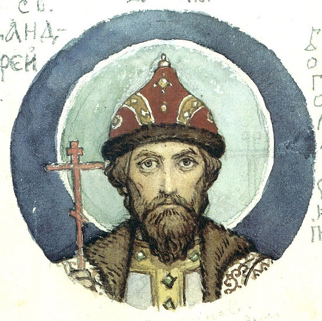
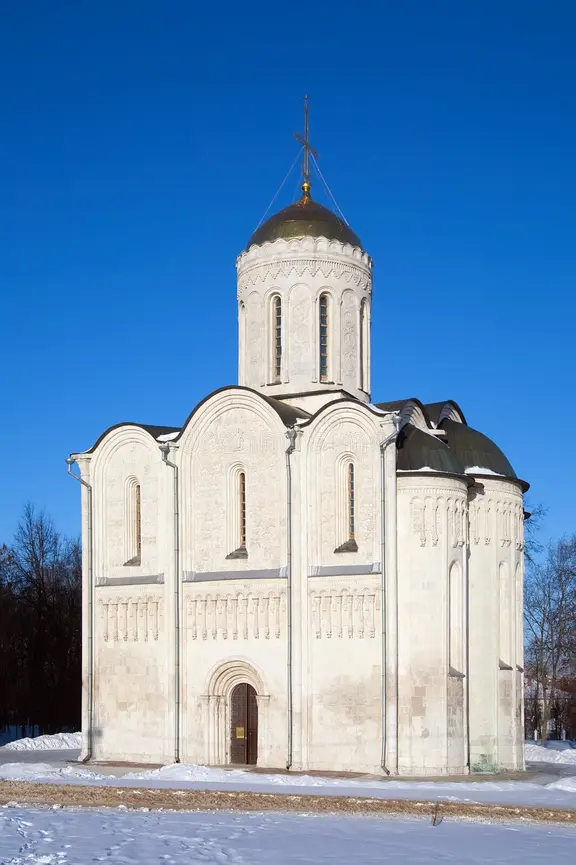
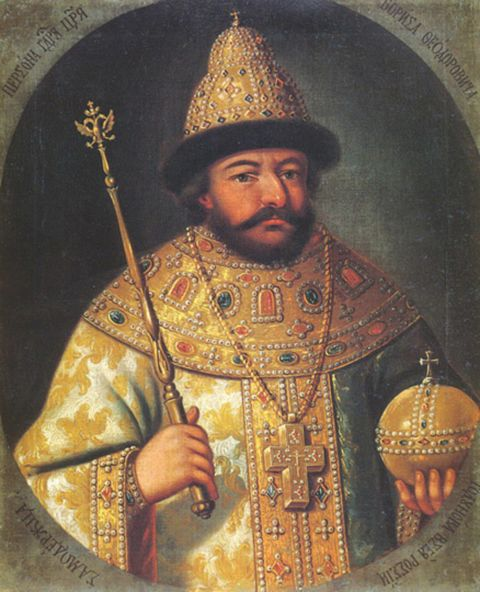
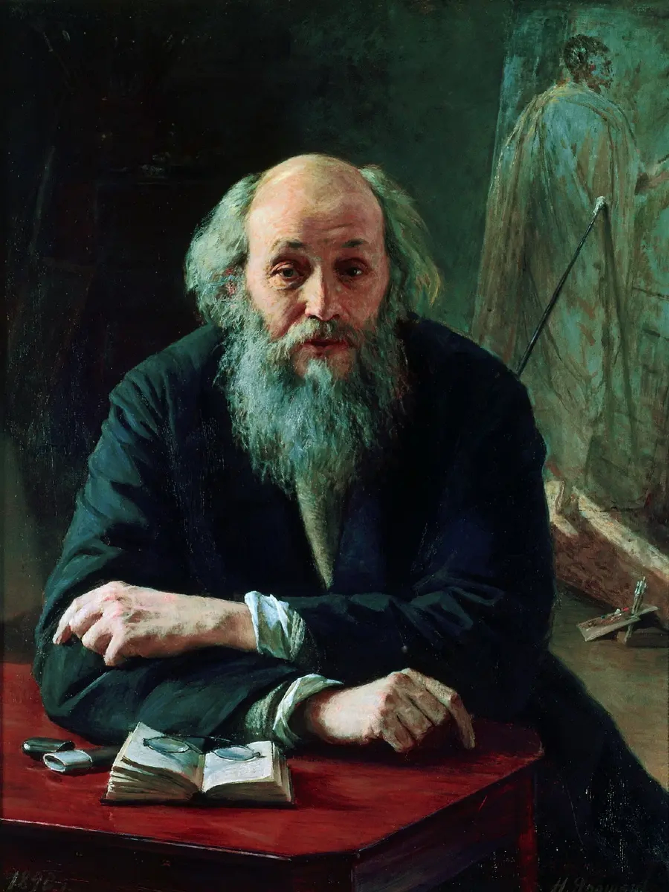
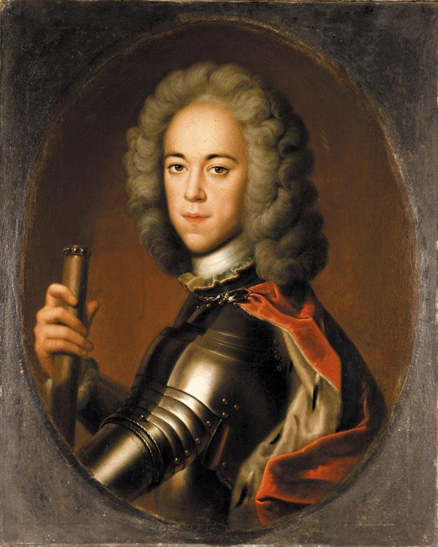
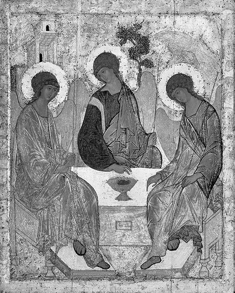
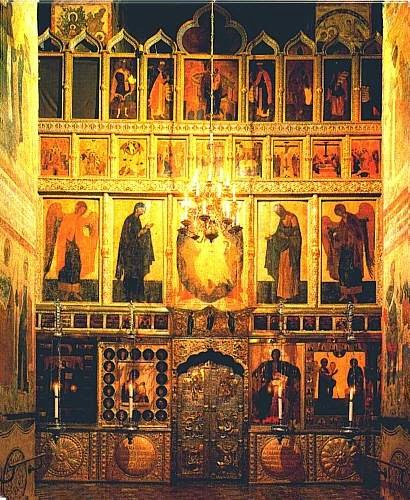
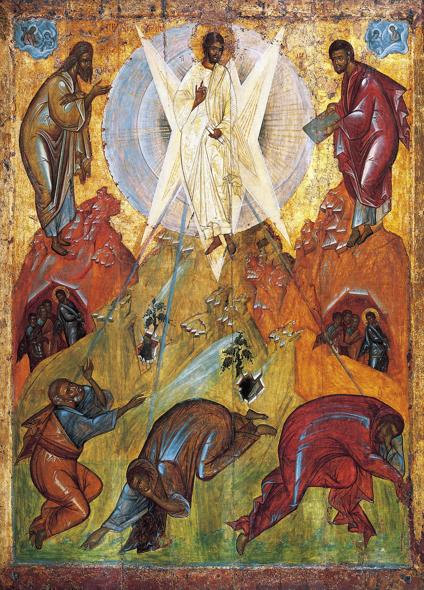

El arte ruso es la imagen de la vida espiritual ideal;
es un puente sobre el abismo, tendido del hombre a Dios.
Capítulo 3
El arte ruso
La imagen de la vida espiritual ideal
El paisaje espiritual de la cultura rusa
La Rus de Kiev es una historia aparte. Es el arte ortodoxo en Rusia, es la plinta, es Bizancio, es el mosaico. Es una gran ciudad plurilingüe, de múltiples estructuras, prototipo de la moderna megaciudad. Y apenas podemos hacernos una idea de su vida. Se distinguía radicalmente de cuanto conocemos, incluso de Constantinopla: se distinguía por su abigarramiento. Yaroslav hizo mucho. Él, como Alejandro Magno, Confucio o César, creó en una sola vida una historia entera.
Pero el auténtico, el genuino arte de la antigua Rus comienza con Vladimir. La dinastía de los príncipes de Vladimir era extraordinariamente ambiciosa y pujante, y soñaba con crear una tierra unida, con tradiciones y cultura comunes. Bizancio no entraba en sus cálculos.
Particularmente interesante fue la vida del príncipe de Bogoliúbovo, Andréi —estepario por línea materna—, enigmáticamente vinculada a Vladimir. Él edificó un pequeño estado extraordinario: una ciudad-Estado. No una polis, como en Occidente, porque a la cabeza del estado estaba el príncipe. Hoy no queda de ello nada en Rusia: literalmente nada que dé derecho a hablar de historia o de contexto. Solo podemos constatar ciertos hechos y trazar cadenas.
El mayor investigador de la arquitectura de Vladimir-Súzdal, el historiador del arte Wagner, recibió el Premio Stalin por su libro sobre el estudio de Vladimir. Pero cuando hoy se lo lee, resulta que lo describió todo, y usted no entiende nada, porque es imposible hacerse idea de dónde salió todo aquello. Precisamente en Vladimir y en Nóvgorod se formó el tipo único de arquitectura rusa que se llama «templo de una cúpula y cuatro pilares con cubierta de zakomary».

Recordemos las catedrales góticas, todas de un mismo tipo: una basílica alargada, muy grande, de división tripartita, con ábside prolongado, etcétera. Exactamente así se ven las variantes del clásico templo de una cúpula y cuatro pilares con cubierta de zakomary: uniformes, casi sin evolución.
La diferencia de la arquitectura rusa está en que no es catedralicia, sino eclesial. Nuestra arquitectura se caracteriza por la multiplicidad de iglesias junto a la escasez de grandes catedrales. En Kiev, es Santa Sofía; en Nóvgorod, Santa Sofía; las catedrales de la Dormición de Moscú y de Vladimir; el templo catedralicio de la Laura de Alejandro Nevski en Petersburgo. Grandes catedrales hay pocas; iglesias, muchas. Y la iglesia no debe ser grande. He aquí una idea de principio.
¿Cómo es una iglesia? La catedral de la Dormición parece tener muchas cúpulas, pero en realidad es de una sola: sus demás cúpulas no son funcionales. La cúpula del templo se apoya en cuatro pilares. Tiene tres ábsides de altar, aunque puede tener uno solo. ¿Qué significa esto? ¿Cómo entenderlo? Puede tomarse la variante ideal de Vladimir, la clásica. ¿Qué tiene de interesante? Que la construcción interior coincide plenamente con la exterior. Interior y exterior coinciden por completo en su significado.
Este templo es deliberadamente antropomórfico, lo cual, en la terminología arquitectónica, designa los valores antropomórficos empleados: he aquí la cabeza, el cuello, los hombros, el manto. Es decir, existe una sabiduría hondísima acerca de por qué los templos son pequeños: porque nosotros mismos somos el templo. Debemos albergar ese templo dentro de nosotros y asirnos a esos pasamanos. El templo dentro de nosotros, o nosotros en el templo. No es separación, sino una idea arquitectónica profundamente espiritual de acercamiento entre el hombre y el templo.

El templo, por dentro, está calculado a propósito en ese movimiento de la unicupidalidad. ¿Qué está representado en el espacio bajo la cúpula? Allí está pintado siempre Cristo Pantocrátor, que los mira a ustedes desde lo alto con el libro abierto. Por eso decían los ortodoxos: «¿Qué nos importan sus templos católicos, esas manos de ascetas, resecas y tendidas en plegaria? Nuestro Dios, en cambio, desciende expresamente hasta nosotros».
Aquí están representados los guardias de Dios: la Santa Hueste y la družina principesca. En general, este tema de la vertical de la unción divina está unido, o mejor dicho fundido, con la ortodoxia y constituye una estructura de la conciencia y de la mentalidad. He aquí la cabeza: Él es el ungido de Dios, y la hueste en que se apoya. ¿Y hacia dónde se mueve la hueste? Hacia donde la cabeza se vuelva. De ahí el dicho: el príncipe, con su hueste, se dispuso a partir de camino. Todo esto son modelos de un solo hombre, de la sociedad o del estado. Antes este modelo no existía; en Bizancio la estructura era del todo distinta. Es una forma nacional de expresión. La mentalidad abarca una enorme cantidad de elementos que expresan una tradición espiritual prolongada.
La arquitectura eclesial no ha cambiado, ni puede cambiar. Hubo varios intentos de apartarse de los fundamentos, y todo volvía enseguida a su sitio; de lo contrario, todo se derrumbaba: el templo, la fe y la lengua del estado. Rusia no puede apartarse de esta forma. Y no comprendemos qué signo semántico tan genial es este, que simboliza todo a la vez: la mentalidad, la estructura del estado, nuestra estructura espiritual.
La cúpula se sostiene con contrafuertes interiores o pechinas, y después vienen los cuatro pilares (exactamente «pilares», y no «postes»). ¿Qué significa pilar? Cada pilar está unido, por su pechina, a un evangelista. Los cuatro pilares significan el Evangelio de cuatro pilares. Y la representación es siempre la misma: en las pechinas están siempre los evangelistas con sus signos místicos. Nosotros estamos allí, a la base del pilar que asciende.
La cubierta es, precisamente, la ausencia de tabiques entre la cúpula y las cornisas del techo. Es un dolmen dentro del cual nos encontramos. En cuanto aparece el tabique, eso es modernismo, y no sirve de nada. Nosotros estamos siempre dentro de ese espacio. Y siempre de pie, porque con toda nuestra tensión debemos resistir a ese flujo.
Una vez conocí a un hombre asombroso apellidado Serguéyev. Regentaba la cátedra de matemáticas de la Academia Médico-Militar de Leningrado. Era un hombre de grandes rarezas, un loco, podríamos decir. Iba con un gran maletín plano donde siempre había una toalla limpia y una botella de vodka. Antes de empezar la lección, derramaba un poco de vodka sobre la toalla y se enjugaba con ella la cara y las manos.
Venía a nuestros cursos a dar lecciones y contaba experimentos fenomenales que realizaba en su Academia: experimentos con ratas sobre la transmisión de información a distancia, cosa importantísima para los submarinos. Y nos dijo, en particular, que la cúpula hecha en semicírculo es una construcción tardía, y que la verdadera cubierta es el bulbo. Y decía: «Esto no es un bulbo: es una gota en rotación. ¿Y qué es una gota en rotación? Es una gota que crea un espacio de máxima energía». En los libros no está escrito nada semejante; de ello solo hablaba Serguéyev. Nada es casual. Por eso en la iglesia surge una energía colosal. Por eso la gente no debe sentarse en ella: solo estar de pie.
La iglesia debe ser pequeña. Y debe tener un pilar que asciende, como si el espíritu de Dios viniera a nosotros a través del Evangelio.
¿Cómo y cuándo se hizo este invento —hablando en simplificado—, uno de los mayores descubrimientos del mundo: la forma del templo antiguo? En todas partes, en los libros, está escrito: la sección áurea. Pero qué significa eso no queda del todo claro. Siguiente pregunta: ¿quién lo hizo? En los libros se dice: hacia el giro de los siglos VII y VI se formó y conformó el tipo de templo períptero con columnas. Pero ¿qué significa «se formó»? Vemos el resultado, pero ¿cómo y dónde ocurrió? En Bizancio todo es muy distinto, y otros son los materiales, y este es un tipo griego. La cultura se transmite a través de la personalidad. Pero cómo se formó esta forma del templo, se desconoce. ¿En qué se distingue la cultura griega de la rusa? En apariencia es la misma, pero en esencia es otra, pues aquí ese pensamiento está cristalizado idealmente y expresado exactamente igual en el exterior.
La arquitectura de Vladimir y la de Nóvgorod se distinguen entre sí. Las pilastras están resueltas de manera diferente. Aquí conviene señalar un aspecto importante. Si se mira la planta de la catedral de la Dormición de Vladimir, se verá que esa catedral tiene el mismo modelo que la catedral de la Dormición de Moscú. El caso es que a Aristóteles Fioravanti —arquitecto italiano— lo enviaron entonces a Vladimir para que hiciera en Moscú una catedral igual que aquella. Vladimir era concebido como la vieja capital, y Moscú como la nueva. Por eso las catedrales fueron denominadas igual, y entre sí son equivalentes.
Y algo extraordinariamente importante para la historia singular de Rusia y de su arte de edificar es que el ideal del zódestvo nacional ruso es congenial con el paisaje. Es siempre paisajístico. ¿Cómo están trazadas las haciendas rusas? Nunca se las levantaba sin más. Siempre se las concebía como casas natural e inseparablemente unidas a la naturaleza. Incluso si se toma la más extranjera de todas las ciudades rusas —Petersburgo—, también ella se distinguía de sus análogos occidentales por su carácter paisajístico. Cuando usted está en París, lo percibe como un teatro: está siempre en escena; París es escénico, es dramatúrgico y teatral. Pero cuando está en Petersburgo, está siempre entre el agua y el cielo: está inscrito en el paisaje. Esto puede decirse de toda la arquitectura rusa. La casa Pashkov, por ejemplo, es también una unión con la naturaleza. Por mucho que hayan cambiado las ciudades, adondequiera que vaya, usted siente y ve esa unión. El templo otorga sentido a la imagen del mundo.
Es un rasgo lírico, y al arte ruso es propia la liricidad. Fíjese en la poesía rusa: es siempre paisajística; todos los poetas son paisajistas. Solo así perciben el amor, los sufrimientos, las lágrimas, la alegría: solo a través de la naturaleza y de la alianza con ella.
En esto nuestra cultura nacional se distingue estilística y espiritualmente de la cultura de Europa occidental: en su ligazón con la naturaleza. Difícil es decir qué es eso: un paganismo no extirpado o alguna otra cosa. Se nota al comparar la poesía francesa con la rusa. La poesía francesa está construida sobre el teatro, y la rusa sobre la naturaleza. Todos sus acontecimientos están ligados a los fenómenos naturales, a las estaciones. Y un rasgo desgarrador de la cultura de Vladimir es la ligazón con el paisaje, la pura y beatífica belleza del zódestvo ortodoxo. Un desgarrón semejante entre la vida real y la vida ideal no lo hubo en ninguna parte, y el arte colma esa grieta. Crea una imagen perfecta de belleza y espiritualidad. Se opone, por así decir, a la realidad, y esto, desde luego, se ve en la película de Tarkovski «Andréi Rubliov».
El templo ruso no se levanta en cualquier parte. Hay tres o cuatro puntos donde se construyen templos. El templo purifica el lugar donde se lo levanta. Si en una casa estallaba el cólera, la casa era incendiada y en su sitio se alzaba un templo. Esta arquitectura posee tal cantidad de cualidades adicionales que entran en su misma esencia, que no podríamos enumerarlas todas. Es un espacio sagrado. Acaso solo la arquitectura musulmana se parezca a la rusa por su actitud ante las cualidades naturales.
En la arquitectura novgorodiana hay otro rasgo interesante que la distingue de la de Vladimir. A la arquitectura de Vladimir es propia la esbeltez: aquí opera la ley, si no de la simetría, de la corrección de las proporciones. Todo está calculado idealmente. Nóvgorod no tiene nada de eso. En Vladimir la arquitectura es aristocrática; en Nóvgorod, campesina. A veces produce la impresión de que la amasaron torpemente con las manos, como niños. Con las ventanas, un caos completo: sencillamente las hacían donde querían. La planta es la misma, pero la imagen es muy otra. ¿A qué se debe? Vladimir es un lugar aristocrático; Nóvgorod, mercantil. Por eso existe en Nóvgorod un nombre de templo como «Néreditsa», es decir, «la que no está en la fila». Está muy desarrollado aquí el tema del libre zódestvo de las calles: los que vivían en una misma calle podían simplemente contar las casas, juntar dinero y levantarse un templo, para no estar peor que los de la calle vecina. Esto no altera la esencia principal, ni el espacio, ni la división en pilastras: hablamos solo de matices. Como existen los dialectos lingüísticos, léxicos, exactamente así existe una léxica del templo.
Lo principal para Nóvgorod son las ventanas. Para entender por qué en Nóvgorod se hacían las ventanas como a cada cual se le antojaba, hay que fijarse en la iluminación interior de la iglesia ortodoxa. La luz entra por las ventanas; es la luz celestial: la luz general y la luz que va hacia el icono. Y los novgorodianos colocaban las ventanas de modo que la luz entrara de todos los lados. En Vladimir entra, como en Roma, en línea; los novgorodianos inventaron distribuir las ventanas de manera diversa. Por eso su iluminación venía de todos los lados, por eso se ve siempre el iconostasio entero y todo lo demás. No temían la torcedura ni la irregularidad: no temían nada. Vladimir sí temía: allí había muchas reglas.
Pero en la arquitectura de Vladimir hay algo que nunca hubo ni habrá en Rusia. Cuando el arquitecto italiano empezó a construir la catedral de la Dormición de Moscú, le dijeron: se necesita una copia exacta, pero sin escultura. Toda la arquitectura de Vladimir está cubierta de escultura. Y lo interesante es que el sentido de esas esculturas sigue sin estar claro para nosotros. Desconocemos el subtexto. Y además la escala de ese relieve crece y crece, hasta alcanzar dimensiones delirantes en la catedral de San Demetrio de Vladimir.
En la catedral de la Dormición hay pocas esculturas, y están hechas en forma de máscaras. ¿Qué significan esas máscaras? Es una representación insólita de personajes eclesiásticos. Hay un personaje en la fachada que se repite en la catedral de San Demetrio: Alejandro Magno. Su representación se llama «La exaltación de Iskander», o «La exaltación al cielo de Iskander el Bicornio». Aparecen grifos que arrastran al cielo una cesta. Todo eso como signos de Zeus, signos del poder supremo. Hay otro personaje que en Rusia tiene gran importancia: el rey David, héroe del epopeya poética de los viejos creyentes, que tañe un instrumento. Fue vencedor, luego reinó y, después, se hizo filósofo y poeta. Profetizaba la venida del Mesías de manera literal, como quien conversa directamente con Dios: sin describir nada, profetizando. El rey David está representado repetidas veces.
Fue precisamente Vladimir quien creó tan grandioso precedente en el arte de edificar. Si usted mira el portal de una iglesia de Vladimir o la escultura de la línea del coro, le asombrará la gótica allí presente. Es un portal cuya profundidad entera está tallada. Recuerda el estilo veronés. Y lo más curioso: por doquier están representadas plantas paradisíacas, y en los nichos están de pie los santos. Tal cosa nunca hubo ni habrá en Rusia. Rusia niega las imágenes escultóricas tridimensionales, porque son carnales, sensuales. Es una traducción a un lenguaje de pura emoción.
Andréi Bogoliubski fue un personaje muy extraño. Fue él, y no otro, quien trajo a la Rus el icono de la Madre de Dios de Vladimir: saqueó Vyshgorod y se lo llevó. El templo de la Intercesión (Pokrov) es un templo de la Madre de Dios, y Andréi Bogoliubski instituyó en su ciudad-Estado el culto mariano del siglo XII. Impulsaba la idea nacional del Salvador hacia el enlace con la política occidental, no con la oriental. ¿Por qué? Para entonces la política oriental se había debilitado, la influencia de Bizancio se había acabado. No hay tierras, solo intrigas sin fin. Allá, en Occidente, todo bulle: Cruzadas al Santo Sepulcro, dineros enormes, culto a la dama gentil. Andréi comerciaba con Occidente; estaba al corriente de todo aquello. Y empieza a organizarlo todo eso en su propia casa.
Naturalmente, se granjeó adversarios. Todos los historiadores saben cuánto adoraba y divinizaba a su esposa. Era la única a quien no era infiel, aunque todos ellos tenían serrallos. Eran gentes de reglas morales inestables, abusaban de cuanto podían, pero eso no les estorbaba para alzar iglesias. Pues bien: Andréi amaba a su esposa, y lo pagó. La esposa tenía tres hermanos, a quienes él lo perdonaba todo. Él tenía muchas ideas: quería ir a la cruzada; tenía algo que ofrecer a Occidente como ayuda militar. Y amaba profundamente la belleza, y el estilo occidental. Pero la oposición, a la que nada de eso le gustaba, urdió una conspiración y azuzó contra Andréi Bogoliubski a los hermanos de su esposa. Fue asesinado por manos de esos hombres, y después comenzó una orgía borracha de saqueos.
Cuando a los hermanos se los sometió, un hombre de la misma familia —Vsévolod Gran Nido, que fue sencillamente un gobernante notable— prosiguió la idea de los príncipes de Bogoliúbovo. En su tiempo se terminó la catedral de la Dormición, aunque solo fue pintada en tiempos de Rubliov. En su tiempo se construyó también la célebre catedral de Dmítrov. Y en sus sueños era más prudente. Cuando usted llega a Tiflis o a Armenia, ve un paráfrasis de esa arquitectura. Y los georgianos dicen: bueno, los rusos se pusieron a construir como nosotros. Pero si uno se remite a la época de Andréi Bogoliubski y compara las fechas, resulta otra cosa.
El iconostasio en Vladimir aún no se había formado en ese tiempo, pero se han conservado iconos sueltos del siglo XII. Conviene prestar especial atención a un icono que constituye un ejemplar antiquísimo de la Madre de Dios Orante («del Signo»).
Hay una historia así: de los cuatro apóstoles, uno fue pintor. Fue el apóstol Lucas, y se dice que pintó dos veces a la Madre de Dios. Una de ellas es la Odighitria (la que muestra el Camino), y la otra, la Orante. Si es verdad, nadie lo sabe. En Roma, en el Museo Nacional, hay iconos del siglo I arañados en las piedras: es un hecho. Nadie va allí a mirarlos, y sin embargo allí están la imagen de Cristo, la Anunciación, la Orante sin el signo y gran cantidad de cánones. Pero no están pintados: están arañados en la piedra.
El canon más antiguo se encuentra en Kiev, en Santa Sofía: es la Madre de Dios llamada «Muralla Inexpugnable». ¿Qué canon es ese? Combina dos, e incluso tres, de los temas más antiguos. Es un icono del siglo XII, pintado con gran exquisitez, como si él mismo fuera una catedral: cabeza, hombros —hay en él el dibujo de una catedral—. El profesor Alpatov escribió en francés un trabajo sobre los drapeados en los iconos rusos. Consagró tiempo expresamente a esta cuestión y trazó paralelos muy interesantes. Alpatov comparaba los drapeados antiguos, los bizantinos y los rusos. Poco sabemos de esto, pero al mirar este icono queda claro que lo pintó un maestro dueño del arte de la pintura, y un maestro del verbo.
¿Qué significa el gesto? Remitámonos aquí al admirable trabajo de Averintsev, mayor especialista en la Edad Media. Tiene un artículo que se titulaba: «Para la aclaración del sentido de la inscripción sobre la concha del ábside central de Santa Sofía de Kiev». Hay allí una imagen en mosaico con una inscripción: «Dios está dentro de Ella». Averintsev dice: «dentro de Ella» es dentro de la catedral. Este gesto se llama «muralla inexpugnable»; no es solo un gesto de oración: es un gesto de protección. Y Averintsev escribe: mientras Ella mantenga así los brazos, nada sucederá, porque se forma una energía protectora. Es el gesto de la Madre de Dios Orante. De ahí la creencia de que, mientras Ella esté en ese icono, Kiev seguirá en pie.
Kiev amaba mucho, en los mosaicos, un color que en Bizancio y en Occidente se amaba mucho y que en Rusia no se amaba ni se usaba: el color lila, el color de las violetas. ¿Qué concepto es este? El color amatista, como las violetas y las lilas, se menciona a partir de Vrubel y de la poesía de Blok. ¿Por qué no hay color lila en los iconos, si en Kiev se usaba? Porque el color de los iconos es siempre significativo, textual. Es un texto más. Está el color compositivo o canónico, y está el color como color. En el lenguaje del icono, el rojo designa la sangre, el sufrimiento, y también la victoria y el amor. El azul significa la tristeza, el sufrimiento, y también el cielo y el infinito. Y esos dos colores, el de la pasión y el del sufrimiento, no se pueden mezclar. Y el color lila se crea precisamente mezclando esos dos colores. Los simbolistas amaban mucho el lila. Por eso, si en Kiev la Madre de Dios va de lila, aquí, en Rusia, va de azul oscuro con oro.
Es el arquetipo: la imagen antiquísima de la Madre de Dios protectora. Tiene dos significados: Ella es a la vez la Madre de Dios Siempre Virgen y la Protectora. Hay aquí otra representación con los brazos puestos exactamente igual. ¿Será una proyección? ¿Un disco proyectado? ¿Viene de dentro o está proyectado desde fuera? Evidentemente, ambas cosas. Si es la Anunciación, está proyectado desde fuera. Si es la gestación, viene de dentro. Sobre el corazón, bajo el corazón. A la Madre de Dios, en Occidente, se la representa con el vientre; nosotros no tenemos esos detalles tan prosaicos. Y esto es el Signo. Ella es la Protectora y el Signo.
En el iconostasio, arquitectura y pintura están como proyectadas la una sobre la otra, unidas por su sentido y por su construcción. Es un principio fantástico. El iconostasio se desarrolla gradualmente y se desliga, casi cae sobre el borde de la cúpula delante del altar. Es un gran muro; es un crucero alzado a manera de muro. Y él nos mira, y nosotros comparecemos ante él. Está siempre construido según principios determinados, que no admiten variantes. Si se respetan, esa esbelta idea se sostiene; pero si algo se descarría de ellos, todo se quiebra.
Todas las discrepancias políticas en Rusia siempre se reducen a Pedro I y a Iván el Terrible. Hay quien opina que Iván el Terrible fue un gran constructor. Pero en realidad el grande no fue él, sino Boris Godunov. Existe la llamada «arquitectura godunoviana», de la segunda mitad del siglo XVI, y es una arquitectura genial. Las construcciones hechas bajo Iván el Terrible son de tienda (shatr). Tomemos, por ejemplo, el templo de San Basilio el Bienaventurado. Su parte central es de campanario, vertical, apuntada, y repite la saeta de Kolomenskoye, que fue alzada en honor del nacimiento de Iván el Terrible. Lo interesante allí es la arquitectura paisajística. Pero cuando usted está dentro del templo, comprende que jamás habrá allí oficio divino: es un espacio donde no puede haber oficio.

Cuando se habla de Pedro I, no se dice todo lo que habría que decir, pensando no en la tonsura de las barbas, sino en la quiebra de los principios de esa mentalidad. Por supuesto, no rompió nada, pero hizo una cosa curiosa. El arte sagrado era el único lenguaje figurativo. Pedro introdujo otro lenguaje: el lenguaje secular. Trajo a Rusia el lenguaje del arte secular, y aquí, a diferencia de Occidente, el arte está dividido en sagrado y secular. Y desde el tiempo de Pedro entra en nosotros la cultura de la imagen secular.
Si se examinan atentamente todas las imágenes del arte ruso, las masculinas y las femeninas, todo se reduce a lo siguiente: en el caso femenino, la imagen de la Ternura (Umílenie) se pinta en función del lugar donde ocurre la aparición. Por ejemplo, la Ternura de Tomsk: a un monje, en un monasterio, se le apareció la Madre de Dios. Lo interesante es otra cosa: que las imágenes masculinas son de dos tipos. Uno es las imágenes de mancebos, de varones en la adolescencia: Jorge el Triunfador, Boris y Gleb, Casiano y Damián, Tomás, y las imágenes de mancebos. El segundo es las imágenes de ancianos. Es decir, las imágenes masculinas son las de quienes aún no pecaron o ya se alzaron sobre el pecado. En el segundo caso, no es en modo alguno decrepitud o vejez: es la imagen de la suprema sabiduría, que expresan la frente, las cejas y las barbas. Esto es muy típico.
Si se echa una mirada fugaz, no profunda, al arte ruso, puede descubrirse un fenómeno muy interesante. Por ejemplo, cuando Kramskoy pinta el retrato de Tretiakov, pinta a un santo anciano. Igual están pintados Tolstói y Dostoievski. Miremos el retrato de Tretiakov: es un hombre de la segunda mitad del siglo XIX, pero tiene el gesto característico de las manos, expresivo de recogimiento. ¡Qué formas de manos, de dedos, qué limpieza! Kramskoy pinta a Tretiakov, pero inconscientemente colma el retrato también de otro sentido.
Cuando Tolstói necesitó mostrar el ascenso a la santidad y mostrar a un auténtico santo guerrero, nos mostró a Andréi Bolkonski fuera del matrimonio. Tolstói lo hace un auténtico san Jorge ruso, porque usted nunca lo ve casado. Bolkonski aparece cuando ya no es esposo, y cuando muere, aún no es esposo. O había estado casado, o todavía no lo era. Es puro. ¡Y cómo muere! Tolstói describe su tránsito no a través del gran martirio espiritual, sino a través de una alta purificación espiritual. Andréi Bolkonski es un santo guerrero. Y si se sigue cómo Tolstói conduce su línea y qué textos pone en sus labios, queda claro que el escritor ya pisa con un pie el siglo XX.
Si un artista ruso pinta a una mujer, le es indiferente qué mujer y de qué época representa: será indefectiblemente un ángel o alguien con un ángel en el alma; encarna la pureza. No es válido para todos los artistas rusos, pero sí para la mayoría. Lo mismo puede decirse de los retratos de Surikov, de Fedotov, de Borovikovsky.
En el Museo de Bellas Artes hubo una exposición «Retratos del siglo XVIII». Lo primero que saltó a la vista: todo el retrato occidental está pintado con gran garbo. Están pintados por mano experta, por escuela poderosa, pero ninguno, por contenido, profundidad y misterio, pudo compararse siquiera con el retrato ruso de siervos.
Miremos el retrato de la embarazada Praskovya Zhemchugova. Produce una impresión sencillamente pasmosa. Fue un encargo al pintor Argunov: pintar un retrato de gala. Solo que no salió de gala. Miramos a Praskovya de abajo arriba; está de pie ante una columna de bronce, con una bata de belleza pasmosa, de tono rojo oscuro con franjas azul oscuro. En la cabeza, una cofia; en la mano, un pañuelo blanco. Y el rostro como el de la Madre de Dios: angosto, de mejillas hundidas, de ojos enormes, tan misterioso, con el alma que se le va. Está y no está. Y ella, con ese vientre, en ese espacio, y ante ella el ídolo de bronce. El cuadro está saturado de dramatismo espiritual y anímico. Surikov quiso transmitir el drama anímico de la boyarda Morozova, pero no le salió como en este retrato. Aquí hay un resplandor interior y una absoluta disponibilidad al sacrificio: al doble sacrificio. Ya está entregando a su hijo. Este retrato lo pintó un hombre del pueblo. Tal es la peculiaridad del retrato de siervos: los pintores que pintaban esos retratos a la vez decoraban iglesias y pintaban iconos. Tenían esa destreza: hacer de un hombre un ángel. Querían ver en el hombre un ángel.
Esta tendencia también está expresada en la poesía. Anna Kern era una mujer de ninguna monta, pero sobre ella se escribió «Recuerdo un instante maravilloso». Y ni siquiera en Lérmontov, que no amaba a las mujeres, hallará usted palabras malas contra ellas.
Y lo más interesante es que Malevich, cuando pintaba retratos, también pintaba ángeles. Y es igual cómo pintara: representaba la pureza, una especial inocencia lustrada. Lo mismo cabe decir de Petrov-Vodkin, hombre a quien tocó ser a la vez artista ruso y artista soviético. Hasta el retrato de Anna Ajmátova es purísimo espécimen. Claro que los pilares se tambalearon cuando Mayakovski escribía sobre su mujer. ¡Una sola palabra: futurista! Pero cuando Esenin escribe sobre las mujeres, las lágrimas ruedan solas. «Anna Snegina»: paisajes ideales, lágrimas en los ojos.
Cosa asombrosa, naturaleza singular de la mentalidad artística: desde los tiempos del arte antiguo hasta los acontecimientos más recientes, sobre el artista gravitó siempre una misión especial —mayor que sobre los artistas de cualquier otro país—. Es una lástima que antes de Diághilev, antes del episodio de la primera integración del arte ruso en el espacio mundial, no existieran vínculos entre la cultura de Rusia y la cultura de Occidente. Existía el vínculo en un solo sentido: los artistas rusos en el extranjero, en lo fundamental Rusia en Italia. En el siglo XIX empezaron a viajar a Francia, pero no hubo influjo pronunciado. Occidente no conocía el arte ruso.
Antes de 1900 no hubo exposiciones ni vínculos artísticos: Rusia se hallaba en aislamiento artístico. Y toda integración científica o artística es necesaria: el bagaje cultural debe entrar por fuerza en la composición de la cultura mundial. Y cuando empezamos a entrar en esa composición, a comienzos del siglo XX, lo primero que entró fue el icono. Y produjo el efecto de una bomba estallada.
Rusia nunca tuvo filosofía propia. Solo tuvo filosofía religiosa. Rusia empieza a recibir filosofía apenas a comienzos del siglo XX, y todavía no pura, sino literario-social: Losski, Berdiáyev, Shestov. En Rusia a la filosofía o se la ahoga o se la pone contra el paredón. Karsavin regresó y murió en un campo; al padre Pável Florenski lo ahogaron en el mar; a Vernadski lo dejaron pudrir en la cárcel. Lenin fue nuestro único filósofo. ¡No puede haber otros!
Cuando murió Stalin, en su dácha hicieron un museo y empezaron a llevar visitantes. ¡Qué interesante era aquello! Supimos qué gramófono tenía, qué discos escuchaba, cómo vivía. ¡De una modestia extraordinaria! Y no entendía la diferencia entre la reproducción de «Ogonyok» y una obra de arte. Tenía su propia galería de cuadros: recortaba reproducciones de las revistas y las enmarcaba personalmente. Es, de una parte, conmovedor; de otra, espeluznante. Y allí tenía un piano de cola. A ese piano solo se permitía tocar a ciertas personas, y a veces se invitaba a artistas. Pero lo que más le gustaba era oír tocar el piano a Zhdánov. Y cuando este murió, Stalin dijo: que quiten el piano, ya no hay quién toque. Y retiraron el piano — esto nos lo contaron los empleados del museo. Con los filósofos fue igual: fuera los filósofos; el filósofo aquí solo soy yo, y ya no hay quién piense.
En Rusia no hubo filósofos, pero fue dotada extraordinariamente de artistas.
¿Qué distingue a los escritores, poetas y artistas rusos? Un defecto profesional. No son simples artistas de la forma: asumen y acogen en sí todo, reflexionan, ofrecen un corte extraordinariamente profundo de la cultura mental y de la filosofía. Están cargadísimos de contenido. El arte ruso es muy imaginífero y muy interesante en el pensar. Esto no significa que el arte occidental sea inepto y vacío. Simplemente, no siempre valoramos correctamente nuestras cualidades y nuestras posibilidades. Nuestra gran literatura soviética no inventó nada nuevo: solo lo simplificó todo, lo hizo todo muy elemental. Si se acude al arte soviético, se ve que continúa esas tradiciones de la representación de la santidad, pero en versión simplificada al extremo, algo mísera, como en «Tierras roturadas» o en «La Guardia Joven». Allí también están representados los santos mancebos, pero de manera muy mísera y lineal. ¿Por qué desapareció de la vida un escritor como Tolstói? Es imposible leerlo, igual que a Fadeyev: un lenguaje muy mísero, simplificado. ¡Y sin embargo parecía describir cosas tan importantes, la guerra! Pero allí están las tradiciones de la representación de los santos. Y en esa simplificación esa idea puede vivir como vive en Surikov, en Petrov-Vodkin, en los cuadros de Reshetnikov: con una simplificación mísera al extremo, hasta el átomo, cuando desaparece todo salvo la idea de santidad.
Las tradiciones forman la mentalidad, el campo mental de la cultura. Y la religión entra en la tradición. La religión no puede ser separada artificialmente: es parte del campo único de las tradiciones espirituales, psicológicas y paisajísticas de nuestro inconsciente.
La conciencia artística rusa
En el arte, el problema más importante es la mentalidad. Es la conciencia artística, que se forma largo tiempo y largo tiempo dura. Cambiando de formas, no se altera en lo esencial. Es lo que se llama tradición de la conciencia artística, cultura de la vista y de la percepción del arte. Todas las tradiciones actuales, en todo el mundo, se formaron en la Edad Media. La Edad Media creó el fundamento de la conciencia: el confucianismo, el budismo, el cristianismo oriental y occidental, y hasta el hinduismo.
Las religiones medievales se distinguen de la conciencia prerreligiosa en que la conciencia prerreligiosa es mítica o pagana. Todas las religiones suponen la presencia de un solo Maestro, que deja un libro, porque no hay Maestro sin libro. El Maestro mismo nunca escribe libros. Y Mahoma nunca escribió: murmuraba algo entre dientes, y otros anotaban tras él. Y Cristo no escribió. ¿Fue siquiera alfabeto? Bulgakov escribió que Cristo sabía muchas lenguas y era un hombre doctísimo. Pero hay otras opiniones. Y ¿acaso le importaba a él? Eran todos transmisores: los enviaron a los hombres para entregar un mensaje; su oficio era la predicación. Supongamos que escribiera: ¿quién leería ese libro? ¿Cuántas personas? Eran todos hombres de camino: vagaban y predicaban. En cambio, las catedrales son aglomeraciones de gente. Y el cristianismo es para Rusia el fundamento capital en sus tribulaciones.
¿Qué hubo antes del cristianismo? ¿Qué se hizo cuando se lo abrazó? Lo primero: quemaron a todos los Perún. Bien había que empezar por algo. Ahogarlos en el Dniéper, prenderles fuego, que no quedara ni rastro. Pasan los siglos. ¿Qué hay que hacer para una campaña antialcohólica? Talar los viñedos: así no habrá nada que beber. Pero no sirvió de nada: los alcohólicos se pusieron a beber agua de colonia. Evidentemente, la fuente del mal está en otra parte.
En Rusia jamás se ha extirpado ni se extirpará su profundísima vinculación con la naturaleza. No hay Perún, y Perún está. En la estética misma de la encarnación del cristianismo, en la imagen artística nacional misma, vive ese espíritu de fusión: el principio de la naturaleza y el principio de la doctrina ética. Esas cosas están unidas. En Occidente es del todo distinto. Recordemos Vladimir: ¡cuántas flores, hierbas, aves y rarezas en la fachada de sus templos! En Nóvgorod no hay nada de eso; Nóvgorod está sin descifrar desde ese punto de vista. Todos sus símbolos están incrustados en los muros, y todos, absolutamente todos, son perunianos. En Vladimir se entusiasmaban con la belleza; en Nóvgorod, con los símbolos solares. Y en Nóvgorod hasta hoy se llevan a la tumba croquetas de carne y otras viandas que corresponden al difunto. Nóvgorod siempre se distinguió por su herejía, por su ligazón con la naturaleza, por las imágenes perunianas. En Nóvgorod, en cada iglesia está representada la rueda solar —el sol con patitas, como en el ornamento de Riazán—. Dicen directamente: Yarilo. Y en las casas novgorodianas, ninguna de las bellezas de Vladimir. Las formas son toscas; en el material queda la huella de la mano. No se avergonzaban de sus aficiones: Nóvgorod vivía una vida libre y aparte.
Para Rusia la arquitectura es muy importante, y se divide tajantemente en arquitectura de madera (que es lo terrenal) y de piedra (que es lo celestial). La diferencia de material es de principio: la madera es cosa temporal, arde; la piedra es eterna. La madera es resina, bosque, calor, familia; es la ligazón con la tierra, con la tradición. El hijo se casa: levantamos la casa. La iglesia, en cambio, se levanta para todos. Solo en el siglo XVII, cuando en Occidente florece el barroco, se construyó en nuestro país, por primera vez y por decreto, el palacio Térem y comenzó la construcción italiana.
Cuando se levantaban iglesias, casas, haciendas, siempre se procuraba observar el principio que hubo en la antigua Grecia: el principio de armonía entre el mundo terrenal y el celestial, para que también en el alma hubiera armonía. El arte siempre se opuso a la realidad. Nunca fue irrealista. Se oponía y daba otro modelo, como mostró genialmente Tarkovski. Por eso, si en un icono se representa a un jinete sobre un caballo, no es un caballo cualquiera, sino un caballo de fábula, de patas finas, con crin, la cola en anillos, divino, eterno. Con él no se puede arar ni acarrear agua.
La arquitectura une en sí dos cosas directamente opuestas: la propia arquitectura y el traje. ¿De qué cosemos? ¿Con qué material construimos? Si se escribiera una historia de la arquitectura, y no del arte de edificar, habría que escribirla como el desarrollo de los materiales. Los griegos no sabían construir, pero fueron geniales artífices y crearon el orden arquitectónico. Tenían mármol, que se desmenuzaba. Los romanos, en cambio, sí sabían construir: crearon el hormigón y conocían las fábricas de ladrillo.
Por otra parte, precisamente la arquitectura, y nada más que ella, es el arte más ideológico: es la concentración de ideas expresada en la materia de hoy. La arquitectura no es solo material: es también un pensamiento congelado para los siglos.
Por el traje se puede saber en qué milenio estamos. Una de las mayores revoluciones del traje la produjeron los españoles en el siglo XVI. No fue una legislación de la moda, que es otra cosa, sino una revolución: inventaron los corsés. También hubo corsé en Egipto, pero era otro. Los españoles hicieron corsés masculino y femenino. Después ese corsé se convirtió en casaca, y ellos se pusieron calzones. Antes de ellos se llevaban calzas de ante; ellos propusieron los calzones, que no dejaron de usarse hasta el siglo XIX. ¿Y dónde se sujetaban las medias? Con artilugios, al corsé. Toda esa ropa era ajustadísima. Los italianos llevaban una capa normal, larga y cómoda. El español, en cambio, está de pie, sin respirar, en su corsé, su capa corta y su cuello incómodo. Cuando en el teatro español se ve a la gente arrojando sombreros, da risa. ¡Los sombreros los arrojaban los franceses! Los españoles no podían hacerlo a causa del corsé, y se inventaron llevar pequeñas cofias: birretes con pluma de avestruz. Así es el retrato de la dignidad española. Crearon una genial cadena semántica. No pueden responder, les cuesta hablar, y solo hacen señas con los ojos. ¡Qué energía por dentro! Está a punto de matar, pero no puede moverse.
Nuestro traje es un lenguaje en clave. El traje y la arquitectura tienen el mismo sistema de códigos: la combinación de materia y abstracción. Y la cultura rusa, que empezó a formarse apenas en el siglo X, se encuentra, igual que la musulmana, en un lenguaje codificado. Se plantea la pregunta: ¿dónde se levantaban las construcciones —la hacienda, la iglesia—? Es la combinación del principio del ser humano y de la naturaleza. Está presente en la poesía rusa hasta el día de hoy.
Lo admirable de la poesía rusa es que todo esto se encuentra entre los poetas de los diversos siglos: en Baratynski, contemporáneo de Pushkin; en Brodski, nuestro contemporáneo; en Pasternak, en Petrovyj, en Zavalniuk.
He aquí, por ejemplo, a Baratynski:
¡Con qué absoluta naturalidad están ligadas las palabras a un pensamiento muy filosófico sobre qué es el ocaso de la vida! Se habla del hombre, pero con palabras e imágenes de la naturaleza: frutos, cosecha, otoño. Estos versos son del ciclo «Otoño».
Otro ejemplo: María Petrovyj. Estudió en el mismo curso que Arseni Tarkovski. María es poeta de los años veinte a los cuarenta. Se ganaba la vida sobre todo con traducciones: fue una traductora muy célebre de varias lenguas y una mujer fascinante.
¿Qué es esto? ¿De qué escribe? De lo mismo que Baratynski: el hombre mira dentro de sí y ensaya encontrar respuesta a ciertas preguntas.
Leónid Zavalniuk escribió poesía toda su vida, pero le daba igual que se lo publicaran o no. Cuando necesitaba dinero, se subía al coche y se ganaba algo como chófer. Es un filósofo de primera magnitud, poeta, artista. Siempre está en diálogo con el mundo y con la naturaleza:
¡Qué versos los suyos: filosóficos, de una profundidad asombrosa, cuando conversa con la naturaleza! No solo fue un poeta notable: también pintó mucho.
Otro poema suyo:
Aquí, en estos versos, corre la misma línea transversal. Todo va por la naturaleza. En Zavalniuk el sauce es una amiguita: él es simplemente parte de ese sauce. No necesitaba nada de ese poder. Y le era indiferente lo que dijeran o escribieran de él. ¡Era plenamente libre!
Y he aquí ahora a Brodski, «La estrella de Navidad»:
Aquí el teatro está montado de otra manera. El telón, la escala; pero todo es lo mismo: a través de la ventisca, a través de la estrella.
¡Qué distinta es la poesía en todas partes, y qué distinta la teatralización! Pero toda ella habla de lo mismo. Podemos tomar conciencia de nosotros mismos, de nuestra historia, a través de un mediador que se llama poeta. Lo mismo vale para toda la literatura rusa en su conjunto: Góncharov, Tolstói, Chéjov, Pushkin. Tal es la esencia y la mentalidad de la percepción del mundo por los artistas. Y cuando hablamos de la arquitectura, del retrato ruso, de la relación lírica con el ser humano, damos a entender el paisaje ideal dentro del hombre, aun cuando los retratos puedan ser diversos.
El mundo histórico, como la arquitectura, posee un signo íntimo y profundo y un principio. Podemos observar algo admirable: cómo la pintura rusa resuelve la cuestión de las composiciones de múltiples figuras. Empecemos por el icono «La batalla de los novgorodianos contra los suzdalianos».
Este ícono no entra en el iconostasio, porque allí entran solo el rango de la Deesis, las fiestas y los santos elegidos. Este ícono fue pintado por una ocasión, y podemos llamarlo una composición histórico-heroica: reproduce un acontecimiento real: los hermanos se pelearon con los hermanos, los de Súzdal con los de Nóvgorod. No se repartieron algo y se fueron a la guerra unos contra otros. Pero, como es sabido, se perdieron en los bosques y no llegaron a encontrarse. Al regresar a casa, ninguna de las dos partes se explayó sobre el tema. Sin embargo, los novgorodenses resultaron más astutos y crearon un ícono sobre el tema de su supuesta victoria. Y aquí se muestra la victoria de los novgorodenses sobre los de Súzdal. Este ícono es genial y constituye un documento histórico muy característico de Rusia. Los novgorodenses fueron los primeros en decir: «¡Hubo batalla, y la victoria quedó de nuestra parte!»
En la parte superior del ícono se cuenta una historia muy conmovedora. Aquí está representado el puente sobre el Vóljov y el detinets de Nóvgorod, el kremlin de Nóvgorod. Por cierto, nunca fue representado, excepto en la leshádka. La leshádka son unas almenas en forma de roca, muy al estilo de Giotto. Se muestra el kremlin de Nóvgorod, la Santa Sofía de Nóvgorod, y de la Sofía salen precipitadamente los novgorodenses y caen de rodillas, porque de Bizancio se trajo a la ciudad el ícono milagroso de la Madre de Dios «La Señal». Aquí los bizantinos entregan a los novgorodenses el ícono, aquí los novgorodenses lo toman, luego se lo llevan, y otros lo reciben. Visten maravillosamente: vemos aquí el vestido novgorodense. El ícono fue recibido y colocado en el detinets. Allí sucedió algo desagradable: la desavenencia con los de Súzdal, y los novgorodenses partieron a negociar con ellos.
Los de Súzdal llevan gorros tártaros, y por ese rasgo se entiende de inmediato quiénes son. Los novgorodenses pactan con ellos, pero los de Súzdal se apiñan y de inmediato comienzan a disparar. Sobre que las partes en conflicto simplemente no se repartieron el dinero, nada se dice. Pero en cambio los de Súzdal son presentados como traidores: peores que los infieles, porque bautizados. Aún no habían empezado a hablar y ya lanzaron tantas flechas! Pero a los novgorodenses las flechas no les alcanzan. Y desde luego, dice el ícono, la victoria será de Nóvgorod, porque del lado de los novgorodenses están Borís y Glieb, Alexander Nevski y el arcángel Miguel. Es un ícono extraordinario: ¡cómo están pintados los caballos, los jinetes, los gorros tártaros, la propia acción! Se muestra el porte moral del hombre y el porte moral del enemigo. Y nosotros marcamos al enemigo como traidor de la Patria y de la fe. Los traidores siempre serán castigados: he ahí la esencia de este ícono.
Exactamente igual, a San Jorge Victorioso no le hace falta esforzarse: basta con que tome la lanza y mate al dragón, porque de su lado está la verdad y la fuerza de esa verdad. Y esa entonación heroica de victoria absoluta, porque se trata de la defensa de valores universales. Esto siempre está presente en las grandes películas y composiciones históricas. Suríkov lo amaba mucho: se ve en los cuadros «El cruce de Suvórov por los Alpes» y «La boyardina Morózova». Aunque era un hombre del siglo XIX, toda la composición de estos cuadros está construida sobre la potencia histórico-heroica.
El siglo XVIII no amaba este tema: lo pasaba por alto y se concentraba en valores completamente diferentes. Para el siglo XVIII el nuevo valor es el descubrimiento de las posibilidades de representación del hombre. Un gran valor es el retrato. E incluso cuando Levitski muestra la «Victoria de Chesmé», ¿qué vemos? El retrato de gala de Catalina II. A través de ella, de la soberana, de la persona, muestra el artista la victoria, que se ve en el fondo. El siglo XVIII ama abrir polifacéticamente todos los géneros del retrato y muestra por primera vez en la pintura el paisaje.
Y el comienzo del siglo XIX ya es completamente distinto. Este siglo crea una de las epopeyas grandiosas: «Aparición de Cristo al pueblo» de Ivánov. Es uno de los cuadros más hermosos de Rusia. Y tanto el cuadro como su tema son muy importantes. En Rusia siempre hubo dos tendencias: aquella idea que se muestra en este cuadro y la que se muestra en «La boyardina Morózova». Es el tema de una tesis cristiana muy profunda. El tema del cristianismo no desaparece en ninguna parte: permanece en las obras más grandes. Es el tema de la transfiguración espiritual y moral, el tema de Sergio de Radónezh, del campo de Kulikovo, de Andréi Rubliov, de Teófanes el Griego, de Cirilo Belozerski, de Andrónico el Bienaventurado, de Serafín de Sarov, del hesicasmo. La transfiguración moral es uno de los temas principales de la idea monumental rusa. Precisamente esto describe Leskov en su relato «El demonio vegetal» (Chertogon). En este sentido es también muy curiosa «La muerte de Iván Ilich».
Aquí, es verdad, entra otro tema: la transfiguración moral no en sí mismos, sino con la ayuda de la bomba. Ahora quitemos al zar, quitemos a Stolypin, disparemos contra alguno más, y el camino queda despejado.
En el caso de Ivánov lo interesante es que nunca trabajó en Rusia. Apenas terminó la Academia con medalla de oro, se fue a Italia y se quedó allí para siempre. Y este lienzo lo pintó en Italia. El lienzo es enorme, y su taller debía ser grande, no solo para contener ese lienzo, sino también para que el artista pudiera quedarse de pie, mirar, pensar, acercarse, dar una pincelada. Además, se necesitaba lugar para pintar a los modelos. El cuadro está pintado con pintura al óleo pura. ¡Cuántos puds de pintura se gastaron! ¿De dónde sacaba el dinero para pintar este cuadro? Pues para traerlo a Rusia se contrató expresamente un vapor, para transportarlo sin enrollarlo. Todos dicen: era pobre, pasaba tantas necesidades… ¡Qué necesidades ni qué ocho cuartos! Su taller está junto a la casa donde vivió Fellini; se puede ver. Ivánov vivía en una casa enorme con jardín y taller. Comía, escribía cartas a Gógol y a todos los demás, iba a Francia, le gustaba visitar los Países Bajos y Alemania. ¿De dónde, pues, ese dinero? Lo mantenía la familia del zar. Y durante tantos años como pintó este cuadro, le llegaba regularmente oro para que pudiera terminar el trabajo.
En su correspondencia con Gógol hay muchas cosas interesantes. Gógol vivía cerca, a diez minutos de paso tranquilo, y también era un pajarón: vigilaba hasta la última costura de su ropa. He aquí que Ivánov escribe a Gógol sobre la transfiguración rusa, y este responde: «Amigo mío, recibí tu carta. Dos días no pude leerla: tenía cólicos en el vientre». O bien: «La leí, pero no pude penetrar en ella. Había que reparar el reloj de oro; fui al relojero. Reunámonos en el café y hablemos de la vida».
Ivánov estaba en Italia con sus correligionarios. Allí había un grupo muy grande de pintores, que vivían en la misma ciudad e igual de mal que él. Principalmente eran alemanes, pero también había muchos ingleses. A estas personas se las llamaba los «nazarenos». Formaban un grupo artístico muy religioso, muy ideológico, en el que entraba Ivánov, así como muchas otras personas célebres, por ejemplo Caspar David Friedrich. Lo encabezaba Friedrich Overbeck. Su idea principal era: por todos los medios resucitar la idea monumental de la pintura nacional y el arte verdaderamente cristiano. Esa era la tarea del comienzo del siglo XIX entre tales pintores grandiosos. Para Ivánov el renacimiento era el esclarecimiento y la instrucción del pueblo. Tomó el tema evangélico e intentó mostrarnos si es posible la transfiguración. Lo pintó prácticamente toda su vida y, mientras pintaba, descubrió el paisaje.
Es un cuadro muy interesante. Si a Rafael le hubieran dicho: «Pinta un cuadro de cómo viene el mesías y constituye el signo de la transfiguración espiritual», lo primero que habría hecho es mirar las dimensiones, luego habría tomado el papel, lo habría trazado y habría dicho: «He aquí, debe resplandecer aquí. Ahora, ¿quién es el que predica? Se colocará en diagonal aquí. Y ahora construimos el espacio de modo que sea el más ventajoso para ese tipo de mensaje». Y solo entonces habría hecho lo que hizo en «La Escuela de Atenas» y habría dispuesto a las personas de modo que estuvieran en su sitio. La tarea principal quedaría resuelta.
Pero en todos los artistas del siglo XIX la tarea principal era otra, y no dejaban de hablar de ella. Y cuando Ivánov comenzó a pintar el cuadro, cometió un error, como Suríkov. Este error lo tienen también los directores de cine y los artistas contemporáneos: pintan estudios de los personajes, cómo reacciona cada uno. ¿Pero ante qué? Justo eso es lo que falta. ¿Ante qué señala? ¡Aquí no hay nada! ¿Qué constituye el centro y por qué fueron tan conmovidos? Ivánov pintaba modelos. Pintaba y pintaba. Y por eso su obra consiste en estudios para este cuadro. En Suríkov, en «La boyardina Morózova», ocurre lo mismo: el cuadro consiste en estudios para el cuadro. Caída absoluta del arte monumental en el siglo XIX.
Cuando uno se acerca al estudio de Ivánov donde el agua está pintada sencillamente genial y el muchacho sale del agua, se ve qué hermoso es. ¡Pero el cuadro es de otra cosa! Lo que en verdad está bien es cómo está pintado el paisaje italiano: se puede quitar mentalmente a las personas y contemplar la naturaleza, y esto sí será transfiguración. Cómo pinta la bruma, la luz, el agua, el reflejo, los árboles: ¡es algo increíble! Por eso no se puede decir que el cuadro sea malo o bueno. Es grandioso, pero en él está pintada tanta mentira que no hay dónde meterse. Si se dice la verdad: él, como artista grandioso, buscaba una cosa y encontró otra; encontró un nuevo modo de representación de la naturaleza. Encontró otras formas de pensamiento artístico, muy progresivas. Y lo más probable es que para él mismo su cuadro no fuera del todo claro.
El siglo XIX es el siglo no de la fijación del resultado, sino de la observación del camino. La evolución que ocurre en nosotros como resultado de que nos acercamos a algo. Se desarrolla la prosa y la novela. Es el siglo de las «Almas muertas» de Gógol. Es el siglo del relato largo y atento, donde se observan muchísimas formas diversas de cambio. Y el cuadro, por regla general, crea un extracto, un resultado. Lo más interesante es que toda la crónica heroica del arte monumental ruso estaba fuertemente ideologizada, igual que los artistas. Los pintores se dividían en dos categorías: los que pintaban retratos y los que pintaban tema religioso. No son los franceses, que se enorgullecían de ser agnósticos y ateos y pintaban la desintegración de la sociedad. Los artistas rusos pintaban la transfiguración. En primer lugar tenían el tema religioso de la transfiguración espiritual mediante el esclarecimiento del espíritu. Y desde luego, todos ellos pecaban de la capacidad de dolerse por todo el pueblo.
Cuando Repin pinta sus «Burladores del Volga»: ¿es dolor por el pueblo? Sí. ¿Y para qué lo pintó? Para lo mismo que Gorki escribió «Hondo»: para mostrar el sufrimiento del pueblo. ¿Y el pueblo le pidió que lo hiciera? ¿El pueblo vio alguna vez este cuadro? Pero es que nos encanta sufrir en voz alta en nombre del pueblo y expresar plenamente nuestro afecto mediante el pésame.
Repin pintó este cuadro en Rybinsk, la ciudad principal de los burladores. Allí vivían gente interesante que se dedicaba a ese transporte. ¿Para qué dolerse por ellos, si eran felices? Allí había concurso para ser burlador, como en Venecia entre los gondoleros. Los burladores tenían gremios enteros, repartían de determinada manera el dinero del trabajo, y el transporte era sencillamente necesario. Era su trabajo; ellos ganaban ese dinero. Entre ellos había bebedores y gente normal. Repin quería mostrar el pueblo atormentado, pero como él se representaba mal lo que eso era, tenía una voz del cielo. Esa voz era Stásov. No Belinski ni otro, sino precisamente Stásov miró y dijo: «¡Hay que repintarlo todo! ¡Decididamente, el color no es el correcto!» Stásov le dictaba al artista con qué color había que pintar. Todo esto lo sabemos por cartas y documentos. Stásov actuaba hipnóticamente sobre muchos, incluso sobre Repin.
Repin era un artista muy interesante, pero todas estas composiciones del siglo XIX tenían un gran defecto. Al pueblo no lo conocían; de qué vivía, no lo sabían ni lo entendían. Pero tenían que manifestarse como personas espirituales avanzadas. Y eso ha quedado hasta hoy: no ha sufrido cambios, especialmente en el área de los llamados cuadros histórico-heroicos. Ni siquiera es una tradición, sino un sufrimiento espiritual. Qué hacer con esto es desconocido, por eso al final perdieron todos.
En Rusia el género histórico-heroico no siempre salía, porque siempre en primer lugar estaba la ideología. El siglo XIX no es el mejor período para el arte monumental. El punto fuerte en ese tiempo era la literatura, y los artistas empezaron a imitar a la literatura: «Sal al Volga: ¿de quién es el gemido que resuena sobre el gran río ruso?» Y los artistas muestran esos gemidos en el Volga, ¿pero para quién? ¿Quién compraba esos cuadros? Los compraba Trétiakov, que primero los guardaba en su casa y luego nombró un consejo y los entregó a la ciudad.
En ese tiempo entre occidentalistas y eslavófilos empieza a encenderse la disputa sobre quién fue Pedro el Grande. Desde el punto de vista de Gué, Pedro fue un zar grande, pero un impío.
Repin pintó el cuadro «Iván el Terrible matando a su hijo». Es un filicidio, y a Rusia ya no le quedan herederos legítimos. Pero este tema no puede discutirse con los medios del cuadro.
Y Gué también pinta el cuadro «Pedro interroga al zarévich Alexéi en Peterhof». En él el zarévich Alexéi es un nada, una polilla pálida, un enclenque: un hombre flaco, lánguido, inútil para nada. El cráneo tiene una forma extraña. ¿Quién es el zarévich Alexéi? Nadie. ¿Y Pedro? Quizá severo, pero justo. Gué crea la concepción, la matriz de estas relaciones, expresada de manera ilustrativa.
Este cuadro lo pintó como lo habrían pintado los pequeños holandeses: muy realistamente, documentalmente, mostrando una escena teatral en interior. Lo hizo expresamente así, como si nosotros mismos estuviéramos presentes en ese interrogatorio. ¿Qué hay aquí? Para Gué es muy importante el uniforme de Preobrazhénski de Pedro. Lo pinta con mucho escrúpulo. Este cuadro es un escenario y dentro de él ocurre la acción. No se puede analizar: solo se puede describir. Y el diálogo se pide solo.

Con este cuadro se vincula otro hecho. Cuando se filmó la película sobre Pedro, los actores se seleccionaron conforme a la imagen del cuadro. Por eso apareció Cherkásov. El artista fijó una matriz genial: ahí tienen ustedes a Alexéi, y ahí a Pedro. Y de otra manera ya nadie nunca los presentó. Gué propuso una determinada matriz histórica, y los personajes se pusieron a pasear solos.
En 1971 en el Museo de Bellas Artes se celebraba una exposición. En esa exposición había una sala especial del tiempo de Pedro, y allí había cinco o siete retratos de Catalina. No se parecía a la actriz Tarásova. Todos los artistas representaron a un orangután: una tipa tremenda, con un pecho enorme, con las cejas como Brézhnev. O los artistas querían halagarla así, o realmente era tan fea, pero en los retratos en ella se traslucía algo de bestia. Y allí estaba también el retrato de Menshíkov, que se podía reconocer a distancia. Después: los retratos de Pedro. Allí es joven: esos carrillos, la sonrisa pícara, descarada, los ojos insolentes. La banda roja, el hombro hacia adelante, con desafío. ¿Y qué leemos bajo el retrato? El zarévich Alexéi Petróvich. Un momento, ¡pero él tiene que ser como en el cuadro de Gué! Y el cuadro dice: no, yo nunca fui así. Este cuadro es del Museo Histórico; se puede ir a verlo: no hay ninguna sustitución.

Créame: Alexéi es una copia exacta de Pedro. Igual de enérgico, malvado, de dientes blancos, descarado, y con la misma poderosa energía.
Tengo un guion muy interesante titulado «Metafísica». Fue publicado. El comienzo va desde el momento en que el primer conde Tolstói perseguía al zarévich en Occidente. El zarévich se lanzaba hacia el poder. No podía esperar a que el padre muriera, y este sigue viviendo y viviendo, aunque gravemente enfermo. Los médicos alemanes lo mantienen a base de cebada perlada, porque es un producto extraordinario: en ella hay gran cantidad de vitaminas y es un energético natural. El zarévich espera la muerte del padre, y Pedro no se muere. Desde luego, era una auténtica conspiración política.

Y ahora se entiende la incoherencia de la película. ¿Para qué matar a Alexéi, si exteriormente se ve como en el cuadro de Gué? ¿Para qué ejecutarlo? ¿Quién es él? ¡Una infusoria, una ameba: ni espíritu, ni pensamiento, nada! Pero si él se veía como en el retrato del Museo Histórico, entonces, desde luego, Pedro tenía un miedo verdadero. Era un hombre semejante a él mismo. Y Alexéi era un Pedro I puro.
Los escritores y artistas del siglo XIX ocupaban los lugares de los historiadores y filósofos. Cuando pintaban un cuadro, les interesaba no tanto el lado formal o pictórico-imagético de la cuestión, es decir, la pintura como tal, cuanto el lado histórico-ideológico. En el siglo XIX se sustituyeron a los filósofos.
Tolstói mantenía correspondencia con su tía sobre una cuestión muy importante para él: quería encontrar a quien fue el primer conde Tolstói, de dónde les venía el título y el anillo condal. Tenía un sueño: quería que el primer conde fuera un tal Iván Tolstói, santo, muerto en Solovkí. Lo veneraba y soñaba que el fundamento del linaje de los Tolstói viniera de allí, y por eso reunía material sobre él. Pero cuando Lev Nikoláyevich supo la verdad, se enfrió por completo hacia el origen del linaje, porque resultó no ser Iván, sino su padre: Pedro Tolstói. Y cuando penetró en la vida del padre de Ivánov, el apetito se le esfumó del todo, porque Petréi Andréyevich Tolstói resultó ser hijo de un streltsí. Pedro I perdonó el pasado streltsí del padre de Petréi Andréyevich, y como era extraordinariamente inteligente, lo envió, ya en edad madura, a estudiar al extranjero.
La historia de Tolstói después es sencillamente fantástica. Fue embajador en Estambul, dirigía la política oriental de Pedro. Hombre inteligentísimo, culto, pero Pedro I no sería Pedro I si no hiciera lo mismo que las personas semejantes a él. Dijo: «Te has hecho europeo, eres inteligente, diplomático. Atrapa a mi chiquillo». Le dio como ayudante al conde Rumyántsev, que en realidad resultó ser un d'Artagnan puro. Nosotros tuvimos nuestro propio d'Artagnan, y es el conde Rumyántsev: ¡mosquetero purísimo! Y ese d'Artagnan, junto con Petréi Andréyevich, partió en busca de Alexéi. Cuando lo trajeron, sobornando a Eufrosinia y a la suegra de Alexéi, es decir, la madre de su primera esposa, Pedro dijo: «Pues bien, amigo mío, a ti te toca dirigir la instrucción. Te he organizado un departamento de torturas».
En Rusia no había departamento de torturas. Y Pedro I para Petréi Andréyevich Tolstói organizó un departamento de torturas y lo puso a su cabeza. Y así él, hombre ilustrado e hijo de un streltsí caído en desgracia, torturó a Alexéi. Allí había qué torturar: a Pedro había que saberle con quién se había enlazado. Es que él sabía que tenía delante a él mismo, solo que más joven. Y sus propios asuntos los recordaba muy bien. Así Petréi Andréyevich Tolstói se hizo verdugo.
Pero no fue todo. Lo humillaron hasta el final. Junto a él estaba el conde Apraksin. Todos los partidarios de Alexéi fueron despojados de títulos y propiedades, y el título condal de Apraksin y toda su propiedad, con las cortes zarinas, fueron entregados a Petréi Andréyevich. Y él recibió el anillo. ¿Podía esto gustarle a Lev Tolstói? Y Iván era el hijo mayor de Pedro. Estaba enamorado del padre, lo idolatraba. Y cuando al final, como resultado, Petréi Andréyevich Tolstói fue destituido y desterrado a Solovkí, se fue para allá junto con Iván. Allí murieron. Y el anillo, por testamento, fue entregado a otro. Lev Nikoláyevich, al enterarse de todo esto, experimentó una desilusión y cesó la correspondencia.
Volvamos a Gué. Él también pintó «La Santa Cena», y en este cuadro representó en la imagen de Cristo a Herzen. Incluso a los rusos esto les sorprendió no poco, pero Herzen es Herzen: figura incuestionable. Marx estaba en segundo lugar después de él.
Los artistas estaban muy ligados a las ideas avanzadas, a la política rusa; se ocupaban de la historia, del sufrimiento del pueblo, de los orígenes y las raíces. Al mismo tiempo vivían bastante bien. Y por eso, cuando pintaban retratos o paisajes, en ese momento se les activaban los receptores de ciertas percepciones, pero en cuanto la cosa llegaba a las composiciones históricas, todo se volteaba al instante hacia otro lado. Es el final del XIX y el comienzo del XX. En ese tiempo surge el magnífico tema heroico de Vasnetsov y Vrubel. Es una cosa muy interesante.
Los artistas rusos del siglo XIX pertenecían a la experiencia socialdemócrata avanzada. Vasnetsov en esto no se ocupaba y pertenecía a otra corriente: a la poética, modernista. Entraba en el grupo de los llamados artistas de la escuela realista rusa del siglo XIX. Los «Peredvízhniki» es una denominación incorrecta: muy estrecha, limitada y definitivamente ideologizada. Este tema histórico está dividido en dos líneas: la documental, como en Gué o Suríkov, y la mitologizada. Era la época del ascenso nacional-patriótico, solo que ellos lo entendían de maneras distintas, ocupándose de la historia y doliéndose por la Patria, y de maneras distintas transmitían lo que entendían.
Tanto Vasnetsov como Vrubel pertenecían al ala romántico-mitológica. Vasnetsov creó la postal de todos los tiempos: el cuadro «Los bogatires». En un principio lo simplificó todo al máximo, hasta la conciencia de aquella señora que venía a limpiar la sala, y ella se quedaba de pie, miraba, y la invadía el pasmo. En este sentido fue el más lejos de todos y creaba cuadros del tipo «Ay, florece el viburnum». Pero Vrubel es una conversación aparte: es uno de los geniales artistas-pensadores de Rusia. Creó un verdadero lenguaje histórico romántico. En Vrubel el bogatyr es una figura misteriosa, muy inesperada. Y todo en su cuadro centellea, reverbera con unos asombrosos repiques y trasiegos de color y de formas. Se presenta la imagen del espíritu mítico, de la Patria y del bosque. Desde luego, es un fenómeno de la pintura de una clase increíble, y no solo de escala rusa.
En la Trétiakov está colgada una obra de Vrubel: el retrato de su esposa. Cómo está hecho: dibujado o pintado, no se puede decir. Igual que no se puede decir si es pintura o grafismo. Todas las técnicas pictóricas existentes en el mundo están mezcladas en este retrato: carbón, acuarela, pastel, pintura, papel de color: ¡todo! Desde el punto de vista de cómo pinta y qué pinta, su nombre puede ponerse entre los grandes artistas que iniciaron el movimiento de vanguardia, nos guste o no. Desde luego, se hizo cubista antes que Cézanne. Él abrió la expresividad de esas formas especiales; iba hacia su cubismo desde alguna vidriera: cosa extraordinaria, los cubos de color, todo centellea. Pero Vrubel fue uno solo así: era un genio, pero terminó en un manicomio. Y Repin, con su idea, llegó a una profunda vejez en Finlandia. Bunin lo describe genialmente: sus disputas, sus desacuerdos, su aspiración a la justicia social y el sueño de la transfiguración espiritual. Todo eso les impedía ser artistas verdaderos. Se tomaban sobre sí muchísimo, asumiendo el papel de filósofos e ideólogos.
El iconostasio ortodoxo y la cultura del libro occidental
Veamos el ícono «Salvador en las fuerzas» de la escuela de Rostov de finales del siglo XV. Este ícono fue hecho por los más grandes maestros de un extraordinario artistismo. Constituye el centro del iconostasio: su corazón.
El centro de toda la composición del iconostasio es la imagen de «Cristo en las fuerzas». En torno a él, a ambos lados, se sitúan la Madre de Dios, Juan el Bautista, el ejército santo y los apóstoles. Ellos representan el corazón del rango de la Deesis. Cristo está siempre sentado frontalmente y no mira a los que lo rodean. En las manos tiene el libro abierto de los destinos humanos. Es el tiempo ontológico, el final, cuando vendrá el Juicio Final. Es un tiempo suficientemente complejo, que concierne a la historia, al principio y al final. Cuándo llegará, nadie lo sabe. Por eso el libro está abierto: nos preparamos para ello.
Recordemos la leyenda de los libros sibilinos. Pertenece a la historia de Roma prerrepublicana. Una vez ante el gran rey apareció una anciana: una mujer alta con la piel semejante a un pergamino pardo. Y junto a ella iba alguien de poca estatura, parecido a un niño, pero con una gran barba gris. Y ese alguien arrastraba tras sí los libros. Esta anciana explicó al rey que en esos libros está plasmada la historia de la humanidad con su final, la historia de los Estados y de los destinos. El rey se quedó mirándolos y dice: «¿A cuánto?» La anciana nombró el precio, y el rey dijo: «¡Vaya! Tal suma no la tengo». La anciana se volvió y se fue. Alejándose bastante del palacio, comenzó a quemar los libros. Entonces el rey hizo volver a la anciana y dice: «¿Cuánto?» Ella nombró una suma aún mayor. El rey se niega, y ella de nuevo comienza a quemar libros. Él otra vez la hace volver. Así se repetía varias veces, hasta que en sus manos quedaron dos o tres libros. En la biblioteca del Vaticano se encuentran dos libros, y todos saben que son los libros sibilinos, y nadie tiene derecho de acceso a ellos.
No se puede decir que lo que Él sostiene en las manos sea uno de los libros sibilinos, pero es algo semejante. Hay un cierto registro, y pocas personas tienen acceso a él: es un gran misterio que no se puede conocer. Que Él esté colocado dentro del rango de la Deesis es una revelación. Y a diferencia de todos los demás, Él está representado como aparecido desde otro espacio. Este espacio está señalado, y podemos contar una cierta cantidad de estos espacios: en este ícono son cuatro. La figura en la que Él está colocado se llama «presencia invisible». Él está presente, pero invisiblemente: no lo vemos.
Este ícono es muy profunda, tanto por el contenido como por el significado filosófico. Si se considera como representación artístico-formal, se comprende por qué en Rusia se encuentra el punto supremo de la vanguardia. Si imaginamos que aquí no hay Jesús, sino otra cosa, veremos el primitivismo en estado puro. La tradición es una cosa más profunda de lo que pensamos. El arte existe como una publicidad de sí mismos nacida del tiempo. El arte ruso se duele y sufre por toda la humanidad.
Veamos ahora el iconostasio, punto más alto del contenido sacro-filosófico y religioso, desde el punto de vista del arte contemporáneo.
La «Trinidad» de Andréi Rubliov es uno de nuestros íconos más grandes y una de las obras mundiales más grandes. ¿Por qué mundiales? Igual que David es aceptado por la iglesia ortodoxa, así la «Trinidad» es aceptada por el catolicismo. Precisamente la de Rubliov, y no otra cualquiera. Es un fenómeno de todos los hombres y lo es hasta hoy. Hasta Andréi Rubliov la «Trinidad» entraba en el iconostasio como fiesta y era el principal símbolo de la fe.
Existe la «Trinidad» del Antiguo Testamento, que tiene dos series de representación: la de la propia Trinidad bajo la encina de Mambre y la serie histórica, en la que están representados Abraham, Sara y el siervo que degolla el cordero sacrificial. La Trinidad veterotestamentaria da un argumento referido a la serie del Antiguo Testamento. La «Trinidad» de Rubliov, según el registro, apareció cuando murió Sergio de Radónezh, «en gloria del reverendo Sergio». Sergio llevaba consigo la idea de unión, y no solo de unión política. Él era el ideólogo principal.

Era una obra por encargo. Y el ícono de Rubliov fue uno de los actos más radicales y vanguardistas de la historia del arte. Él personalmente reformó el canon que no se debe tocar. Fue un audaz reformador radical. Y esto se llama el canon de Rubliov, que fue admitido a par con la Trinidad del Antiguo Testamento y aprobado por el Concilio Supremo. No se parece a la Trinidad del Antiguo Testamento, porque Rubliov devolvió a este canon no el relato de Abraham y Sara, sino le devolvió el concepto primigenio. Es un caso único: la imagen no de un acontecimiento devenido ícono, sino de un concepto puro. Pues qué es la Trinidad? La Trinidad es unidad, indivisibilidad y no fusión.
¿Cómo se expresan estos conceptos visualmente? El concepto de consustancialidad se expresa en que, cuando se traza una línea por las cabezas de la Trinidad, resulta un cierto arco en el que están encerrados. Este ícono se considera obra de arte, porque el contenido religioso y mítico más profundo de la consustancialidad es un concepto puramente exterior. Un concepto colegial, colectivo.
Pero la indivisibilidad es un concepto interior. Es la esencia de la unidad. Lo más genial es cómo Rubliov definía la indivisibilidad. Es su esencia única, y ellos mismos son las copas sacrificiales. La composición es asimétrica. La Trinidad debe tener en la mesa el convite: tres tazas, tres tenedores, vino, pan. Aquí no hay nada. No es la taza que está delante de ellos ni una escudilla, sino una copa: un símbolo que tiene un sentido completamente distinto. Ellos no solo son indivisibles: la Trinidad es el concepto de la copa de la vida. ¿Y qué hay dentro de la copa? La sangre. El color que recorre todo el ícono.
Rubliov no tenía miedo de nada. Estaba convencido de su razón y dejó entender que él no discute con nadie ni refuta nada: simplemente hace el ícono de otra manera. Si se le da la vuelta, se verá la forma de la campana. Es otro tema: el tema del toque de rebato, del rebato del Señor.
En cuanto a la no fusión, hay que fijarse en cómo están sentados: están esféricamente cóncavos. Y miren los colores. Ese color azul se llama «golubéts», y Rubliov introduce este golubéts en el ícono. Sobre los colores del ícono escribió maravillosamente el padre Pável Florenski. Dijo que el color es un relato sobre el ícono. En el «Salvador en las fuerzas» están los colores del poder, pero aquí el color rector es el golubéts: la luz del espíritu. Ellos son copa y rebato a la vez, y divisibles e indivisibles. Y el cielo y este color son unificadores. La figura derecha: el verde con golubéts. El verde es el color de la criatura. La unión de la criatura con el golubéts es la naturaleza activa animada-espiritualizada, el principio de Dios Padre. En la segunda figura la capa-golubéts. Unir el color de la tierra con el color del sacrificio: resulta el color del Hijo, y es la figura central. Pero la figura de la izquierda es ligera, en un misterioso capa dorado-transparente. No se puede tocar físicamente. Es el «En nombre del Padre y del Hijo y del Espíritu Santo». Hay indivisibilidad y hay trinidad. Este ícono lo pintó la mano más hábil de un artista virtuoso. Las líneas musicales de los vestidos que expresan el Espíritu.
Toda autoría en las culturas religiosas debe estar disuelta; las obras son anónimas. La autoría aparece en Occidente en el siglo XIV como nombre. Al arte le dio el nombre Giotto. Es un concepto directamente opuesto al anonimato. El arte anónimo es yo, disuelto en la idea de la vida, y si yo soy mi nombre, entonces soy yo quien responde por lo que represento. Si el artista pinta sobre Egipto, es como si dijera: «No es necesario que sea así. Es lo que a mí me parece que fue. Es mi percepción. ¡Yo soy Giotto y pienso así!» Y en lugar del ícono aparece el cuadro, donde yo soy el autor, el director y el ejecutante. Os lo he ejecutado todo, inventado y representado. ¡Variantes cuantas quieran! Las puertas están abiertas.
Pasemos ahora a la ilustración europea del libro. Aquí se puede ver un argumento frívolo: los héroes se abrazan, se besan. Sobre ellos florece un arbusto, inhalan su aroma. En su muñeca está posado un pájaro. ¿De qué se habla aquí? Es el famosísimo trovador que pensaba que era cazador y se hizo víctima: la historia de las pasiones terrestres humanas.
A partir del siglo XII aparecen las ilustraciones de libros y se perfilan dos caminos y culturas completamente distintas. Rusia, a diferencia de Occidente, no fue un país del libro, hasta el siglo XIX. Los occidentalistas son hombres del libro y crean la industria del libro, en la que trabajan grandes talleres de copistas, existentes junto a todas las universidades. Son parte del gremio de canteros. Es todo un ejército de personas con educación especial.
Todos los ciudadanos acomodados tenían bibliotecas propias. Las bibliotecas eran patrimonio, y al dueño de una biblioteca se le consideraba hombre de hacienda. Por sus libros se evaluaba la hacienda. Colectar biblioteca entraba en la tradición de la Alta Edad Media. Las bibliotecas eran fantásticas.
En el siglo XV sale un libro que se llama «La muerte de Arturo». Describe con imágenes la Mesa Redonda y todas las figuras que rodeaban a Arturo, el código de duelos que duró hasta el siglo XIX: el código del rey Arturo. Allí se dice cómo deben comportarse los caballeros en los duelos, cómo vivían en los castillos, en qué se ocupaban, cómo se vestían.
Hay un libro que describe las costumbres, la cultura material y la vida de la corte borgoñona. ¿Qué es la corte borgoñona? Borgoña entonces era un Estado independiente. Tenían tejidos, calzado, joyas, que les proveían los Países Bajos, su feudo. Y la propia Borgoña era sencillamente una fuerza aristocrática, legisladora. Entonces eso se llamaba legislación del mundo cortés. En las ilustraciones se ve cómo de lujosamente vestían las damas… ¡y los hombres aún más lujosamente! Se pueden examinar sus zapatos: tenían una punta tan larga que a veces la ataban a un anillo que se ponía en el dedo para sostener esa punta. Se puede decir que se sostenían a sí mismos sobre las piernas. Los borgoñones definían la moda. En el libro están descritos sus castillos, cómo comían, cómo dormían. También mostraban los trabajos agrícolas. De los siglos medios nos quedó parcialmente la arquitectura, pero las huellas de la cultura cotidiana están en los museos: botones, brazaletes... Pero para que podamos ver el cuadro histórico de la vida hay que escudriñar las ilustraciones. Tras ellas está el ejército de artistas, los que hacían los colores, etc. Así que era una civilización del libro, igual que a nuestro tiempo lo llaman civilización de la computadora.
Un interés especial en aquellos tiempos lejanos despertaba la florística. Eran libros botánicos ilustrativos. La florística sustituía al ornamento: es la principal región ornamental de aquel tiempo. Fue aceptada en todas partes y significaba la alegría infinita del ser.
El arte aplicado alcanzaba el nivel más alto. En Italia les gustaba decorar los muebles. Se los pintaba con distintas imágenes, según lo que allí se guardara: pantalones, vestidos, etc. Una dirección aparte del arte eran los tapices. Como que absorbieron la florística, y en ellos se pueden ver imágenes asombrosas de flores.
En los libros este aspecto de la cultura suele omitirse. ¿Qué es la actividad artística? Es ante todo la industria gremial artística, las imágenes de aquella civilización: la parte caída de la historia.
Siempre proveíamos al Occidente materia prima: pieles, madera, perla de río. En Occidente procesaban la materia prima, creaban producto y nos lo vendían. ¿Cambió algo desde aquel tiempo? Qué cosa tan interesante, que no puede ser tradición espiritual…
El gran vanguardista Andréi Rubliov
El genio de Andréi Rubliov hoy está envuelto en una gran gloria de la cultura patria y mundial. El genio en general es objeto misterioso y anónimo. Y Andréi Rubliov era un artista medieval, un monje, un asceta, es decir, un hombre que en principio escondió su nombre tras la disolución en el nombre monástico: Andréi. Y sin embargo, tanto su nombre como sus obras han llegado hasta nosotros.
Es un verdadero milagro. Existe la opinión generalizada de que sabemos muy poco de él, que la información es sumamente escasa. Pero en realidad no solo no es escasa, sino que el verdadero milagro es que sabemos bastante. No solo de su biografía, sino aún más de su personalidad, lo que, quizá, para nuestro tema es considerablemente más importante. Existe la opinión general de que Andréi Rubliov perteneció a la escuela de Moscú, es decir, que su origen estaba de algún modo ligado a Moscú, aunque esto no lo podemos decir con exactitud. Pero que él era salido del Laura de la Trinidad y San Sergio, eso, desde luego, es así. Probablemente Andréi Rubliov tomó allí los hábitos, estuvo estrechamente ligado a Nicon y al Laura: trabajó allí repetidas veces, y precisamente la «Trinidad» también fue pintada para el iconostasio del Laura de la Trinidad y San Sergio.
La primera mención documental de Andréi Rubliov se refiere al año 1405. Andréi Rubliov, que según las investigaciones nació en 1360 o 1370, era ya un hombre no joven: ya tenía más de 30 años. El testimonio de 1405 es muy interesante. La Crónica Trinitaria dice: «Esa misma primavera comenzaron a pintar la iglesia de la Anunciación en el patio del gran príncipe, no la que hoy se alza, y los maestros eran Teófanes el iconógrafo griego, y Prójor el anciano de Goriódets, y el monje Andréi Rubliov, y del mismo verano la acabaron».
Este testimonio tiene un contenido muy profundo. En primer lugar, hay que prestar atención a que era la iglesia del gran príncipe. ¿Y quién era entonces el gran príncipe? Y en general, ¿qué es el gran príncipe en Moscú en 1405? Era Basilio I, hijo de Dmitri Donskói. De él suelen hablar de pasada, aunque era un hombre extraordinario. Y para aquel tiempo, y para la vida de Andréi Rubliov, él desempeñó un papel muy grande, porque Basilio I fue el primer gran príncipe de Moscú.
Antes de él eran simplemente príncipes de Moscú. Su padre, en cambio, Dmitri Donskói, fue príncipe de Vladímir, no príncipe de Moscú. Y Basilio I, cuando recibió ese título, fue coronado gran príncipe de Moscú: esto significaba que él era como el zar moscovita. Es el hombre con el que está ligado el indudable ascenso social y político de Moscú bajo su égida. Fue un militar bastante importante de su tiempo.
Cuando el príncipe Dmitri Donskói venció en 1380 en el campo de Kulikovo, esto no significaba que los tártaros cesaran las incursiones sobre la Rus. Las incursiones continuaban, envenenaban mucho la vida, y Andréi Rubliov fue su testigo. Además, los propios príncipes rusos entre sí no se llevaban bien. La situación era sumamente tensa. La película de Tarkovski «Andréi Rubliov» es la más grande reflexión artística, el más grande testimonio artístico a través de los siglos. Tarkovski muestra tanto la invasión tártara como las grandes querellas fratricidas.
Pero sin embargo Basilio I supo anexionar a Moscú muchas tierras. Anexionó las tierras del norte, los principados de Nizhni Nóvgorod y de Múrom, las tierras de los komi. Tenía sus relaciones con Lituania: estaba casado con Sofía, hija del príncipe lituano Vitautas. Y además fue constructor. Era un hombre ilustrado para su tiempo, voluntarioso y poderoso. Un hombre que favoreció no solo el ascenso de Moscú, sino la formación en torno a Moscú de grandes tierras. Precisamente Basilio I puso en el Kremlin su iglesia, la de la Anunciación, y para pintar esa iglesia invitó a las personas que ya eran bien conocidas como grandes artistas. La Crónica Trinitaria enumera sus nombres.
Y es ante todo, desde luego, Teófanes el iconógrafo griego. Él no era persona eclesiástica: era un hombre secular. Trabajó en Constantinopla, luego en Teodosia, luego en Veliki Nóvgorod, y después trabajó en Moscú. Era el primer nombre de Rusia. Maestros griegos bizantinos en Rusia había muchísimos: había todo un patio griego o bizantino; tenían su gran escuela, su escritura. Pero Teófanes el Griego era de todos modos un hombre completamente especial: no solo era un artista famoso, sino una personalidad muy famosa. Como en nuestro tiempo la gente va a ver los cuadros de los grandes artistas, así en aquel tiempo la gente venía a ver los íconos de Teófanes el Griego. Se hicieron especialmente célebres sus pinturas en Nóvgorod.
En Nóvgorod Teófanes el Griego pintó muchas iglesias: la de la Natividad de la Madre de Dios y la de Teodoro Estratelates. Pero los frescos más interesantes están en la Iglesia del Salvador de la Transfiguración en la calle de Ilyin. Se han conservado hasta hoy; los restauraron con acierto.
Entre las pinturas de la iglesia de Teodoro Estratelates hay un fresco muy interesante: la imagen del anciano eremita Macario, que vivió en el siglo IV d. C. Teófanes el Griego vino a Moscú ya después de Nóvgorod y se asentó allí.
Tarkovski en su película presta mucha atención a las relaciones de Teófanes el Griego con Andréi Rubliov: muestra su disputa. Muestra, por un lado, su reconocimiento mutuo, su igualdad artística, y por otro lado, muestra sus disputas y relaciones confesionales. Con toda probabilidad todo esto fue realmente así, porque en la Crónica Trinitaria los artistas están enumerados de manera muy interesante: primero está escrito Teófanes el Griego, después el anciano de Goriódets, y solo después Andréi Rubliov.
Una de las investigaciones más fundamentales es el libro de Víktor Nikítich Lazárev sobre Rubliov. Lazárev escribe que, probablemente, Andréi Rubliov era el más joven. Prójor era mayor que él (no en vano se le llama anciano), y supuestamente Prójor trajo consigo a Andréi Rubliov. ¿No fue acaso Andréi Rubliov discípulo de ese mismo Prójor? Pero el hecho de que Teófanes el Griego tomara precisamente esta brigada de artel y no otra testifica con exactitud de que a Rubliov él lo ponía junto a sí, igual que a Prójor de Goriódets. Teófanes, el primer pincel de aquel tiempo, no habría trabajado así sin más en la pintura de la iglesia de piedra de la Anunciación del propio Basilio I, el gran príncipe. Y por eso este registro en la crónica es tan corto. Si uno se detiene a pensar en ella, nos abre ante nosotros un cuadro muy interesante de la vida, de las relaciones entre las personas. ¿Qué hacían entonces estas personas, Teófanes el Griego, Prójor de Goriódets y Andréi Rubliov, dentro de la iglesia de la Anunciación? Más aún, en la crónica se dice que en el verano del mismo año acabaron, es decir, trabajaron solo medio año, e hicieron muchísimo. Cuando se decía que los artistas pintaban una iglesia, esto significaba que hacían tanto los frescos como los íconos. En la iglesia de la Anunciación por primera vez en Rusia fue totalmente pintado y compuesto el iconostasio.
Hasta la iglesia de la Anunciación el iconostasio completo no había existido en ninguna parte: ni en Rusia, ni mucho menos en Constantinopla, ni en los países balcánicos (en Serbia o Bulgaria), donde en ese tiempo florecía la pintura medieval. ¿Cómo y por qué se formó este iconostasio? Difícilmente podemos responder a esta pregunta. Pero el iconostasio fue creado: el iconostasio como rango, como determinado orden filosófico, semántico, incluso místico, de distribución de íconos. Y después de la iglesia de la Anunciación los íconos siempre se distribuyen así en el iconostasio.

El iconostasio tiene una especie de articulación: está muy exactamente dividido, tiene un eje central de simetría, y según ese eje central vertical de simetría siempre se coloca un mismo ícono: el «Salvador en las fuerzas». El Salvador como imagen de Cristo en el día del Juicio Final: Él está sentado a cuerpo entero, mira adelante, hacia la pared izquierda del templo, donde siempre está representado el Juicio Final. En sus manos está el libro abierto de los destinos humanos. Y él como que está presente invisiblemente entre nosotros. A su derecha y a su izquierda se colocan la Madre de Dios en determinada postura, con las manos extendidas hacia él, Juan el Bautista, su guardia, el ejército santo, el arcángel Miguel y el arcángel Gabriel. Y más adelante se despliega el rango de la Deesis, que se dirige al Salvador con súplica («deisis» en traducción del griego significa precisamente «súplica»): son los intercesores por los hombres en el día del Juicio Final.
La tercera fila del iconostasio es la fila festiva. En Rusia se acostumbraba representar los íconos con las fiestas ortodoxas, porque para este tiempo, al parecer, ya se había formado el rango, la liturgia, se había formado el oficio. Ya estaban definidas las fiestas ortodoxas. En la fila inferior se coloca el ícono que pertenece a este templo. Los íconos son transportables, pero todo esto entra en la división de tres o cinco niveles del iconostasio, dividido en parte derecha e izquierda, en la fuerte y la débil.
No vamos a examinar ahora el iconostasio en sus detalles; simplemente prestemos atención a que, con toda probabilidad, este iconostasio fue creado por primera vez en la catedral de la Anunciación. Y ha llegado hasta nosotros tal como fue creado por estos artistas. Es una verdadera revolución en el arte, un gran acontecimiento, porque el contenido interior de la iglesia adquirió adicionalmente una parte muy importante. Es todo el mundo divino vuelto hacia el hombre: él mira al hombre, y el hombre se presenta ante él. Quizá precisamente desde este momento comienza a desarrollarse la pintura de la Rus antigua. No solo el fresco, sino la pintura, porque a cada gran iglesia se le requiere su iconostasio con todos sus elementos.
Ocurren acontecimientos asombrosos: Rusia se convierte en ciudad gran-principesca, Basilio I es el poseedor de un poder fuerte. En esta ciudad trabajan grandes artistas, y estos artistas son sencillamente auténticos innovadores. El registro sobre Andréi Rubliov, ligado a la catedral de la Anunciación, ya testifica de él no solo como artista maduro, sino como artista absolutamente extraordinario, que participó en un acontecimiento artístico extraordinario. Desde luego, él era célebre en su tiempo. Es difícil decir cómo él se relacionaba con su gloria. «¡Quién sabe qué es la gloria!», decía Pushkin. Rubliov era artista de la Edad Media, pincel en manos de Dios. Quién puede decir cómo él se relacionaba con esa gloria. De ninguna manera, al parecer, dado que era monje.
Hay que decir aún unas palabras sobre una alianza interior muy importante entre las personas que trabajaban juntas: entre Teófanes el Griego y Rubliov. Eran correligionarios no solo en el trabajo sobre el iconostasio: eran correligionarios de un calado mucho más profundo, porque todos estaban ligados, fuera de toda duda, con cierto centro espiritual.
El centro espiritual de Rusia entonces era Radónezh, Sergio de Radónezh. Es muy lamentable que a esta figura no se le preste suficiente atención en la historia rusa, y es que es una de las figuras más grandes. Era un hombre genial. No era solo el creador del monasterio de Sergio: era un filósofo, y muy profundo. Era ideólogo y figura sociopolítica, porque estaba directamente ligado a Dmitri Donskói. Sergio de Radónezh daba a sus monjes para la batalla de Kulikovo, estaba ligado con toda la familia de Dmitri Donskói, con Yuri de Zvenígorod, con Andréi Rubliov. Su heredero fue su discípulo Nicon de Radónezh. Más aún: él tenía una escuela: correligionarios, hombres de una misma concepción con él sobre lo que hay que hacer, cómo hay que vivir. Eran el reverendo Savva, fundador del monasterio de Savvino-Storozhevski, y Andrónico, que creó y fundó el monasterio de Andrónikov. Entre paréntesis, el monasterio de Andrónikov era un lugar muy estratégicamente importante en Rusia: por las puertas de este monasterio la gente partía hacia la Horda; por estas puertas Dmitri Donskói, tras la batalla de Kulikovo, entraba en Moscú.
Andréi Rubliov estaba también ligado a Zvenígorod, a Savva, a Yuri de Zvenígorod y al monasterio de Andrónikov, donde quizá murió y donde está el templo que, probablemente, pintó. Andréi Rubliov estaba ligado a Teófanes el Griego.
Discípulo y compañero de armas de Sergio de Radónezh fue Cirilo, creador del monasterio de Kirilo-Belozerski. Llevaba de Moscú libros, y entre ellos, como es sabido, había un libro griego de física. Eran personas ampliamente educadas y de pensamiento profundo.
El vínculo interior entre ellos, la filosofía interior de sus relaciones era aún más profunda de lo que hablamos. Es bastante ampliamente sabido que tanto Sergio de Radónezh, como Teófanes el Griego, como Andréi Rubliov profesaban una práctica espiritual especialmente elevada. Esta práctica espiritual se llama hesicasmo. Con toda probabilidad, estaban ligados precisamente con el hesicasmo, porque esta práctica espiritual tiene sus raíces en el bizantinismo temprano. Uno de sus fundadores fue precisamente aquel mismo Macario, cuya imagen pintó Teófanes el Griego en la pared de la Iglesia del Salvador de la Transfiguración en la calle de Ilyin en Nóvgorod: imagen rarísima en Rusia. Formuló estas ideas cierto Gregorio Palamás, que vivió en Bizancio en el tránsito de los siglos XIII-XIV.
¿Qué es el hesicasmo? Lo traducen de maneras diversas, pero en general esta palabra significa «silencio», es decir, una gran concentración interior. Andréi Rubliov en la película de Tarkovski calló muchos años. Es verdad: este silencio Andréi Arsényevich lo argumenta con que Rubliov mató a un hombre que quería deshonrar a una muchacha santa loca. Pero en realidad el silencio estaba en la práctica del hesicasmo. Este silencio conduce a una profunda, muy espiritual e inteligente oración, como ellos decían, a una concentración muy profunda. En general el hesicasmo predica el modo de vida moral más elevado. No es solo el ascetismo, no solo el silencio, sino un determinado tipo de comportamiento de las personas en la sociedad: responsabilidad aumentada por todo lo que hacen, control sobre todos los actos.
La literatura hagiográfica sobre Sergio de Radónezh dice que a él, como a san Francisco de Asís, lo acogían todas las bestias: los osos, y la zorra, y el lobo: todos venían a él. Había en él una energía tal, una fuerza espiritual tal, una fuerza de atracción de todo lo que rodea, que hasta la bestia feroz, hasta la zorra, hasta el lobo venían a él a comer pan en un tocón, a sentarse junto a él. Es el tema de la atracción mutua, del consentimiento mutuo, de la comprensión mutua, del ejemplo que daban estas personas con su vida ascética, con su comportamiento, con su palabra serena, con su silencio, y no con la falsa palabra charlatana.
¡Cuán necesario era entonces, y cuán necesario es ahora este hesicasmo…! Es necesario siempre, pero especialmente en los tiempos aciagos, en la época de los duros desmembramientos y discordias internas, cuando el hermano va contra el hermano, cuando un hermano trae a los tártaros para exterminar al otro hermano. El príncipe ruso ciega a Basilio II, le saca los ojos, y este se convierte en Basilio el Oscuro… En tal situación se requieren ejemplos muy elevados. Y Andréi Rubliov pertenecía al número de personas que profesaban el modo de vida más severo, más elevado, más exigente consigo mismas. Era tal contrapeso a la desganada dispersión, a la descarrilación no solo de los caminos, sino de las almas.
Por eso, cuando ahora hablamos del hesicasmo o de prácticas espirituales especiales, no hay nada que recuerde herejías; al contrario, entonces era absolutamente necesario. Las mentes más luminosas, los más grandes dirigentes políticos: los que llamaban a la unidad, y los que llamaban a la comprensión, y los que querían convencer a otros de que es necesario este consentimiento, es necesario esta unidad, no solo contra el enemigo exterior, sino contra el enemigo principal, aquel que se sienta dentro de ti. Ellos, desde luego, seguían aquellas reglas máximamente elevadas que daba esta práctica. En ella se sostenían Teófanes, Savva, Cirilo, Nicon. Su portador era Sergio de Radónezh. Y fuera de toda duda, ella tenía un significado muy grande para la personalidad y la creación de Andréi Rubliov.
Así, en el verano de 1405 el iconostasio de la catedral de la Anunciación fue terminado: gran acontecimiento y momento de viraje en la historia del arte ruso. Y luego se conoce otro acontecimiento, del cual también existe un testimonio en esa misma Crónica Trinitaria. Este testimonio, que se refiere al año 1408, dice que Rubliov es invitado a Vladímir para pintar la catedral de la Santísima Madre de Dios, a saber, la catedral de la Dormición, catedral metropolitana de Vladímir.
He aquí el fragmento de la crónica que habla de esta invitación: «Del mismo verano, el 25 de mayo, comenzaron a pintar la iglesia de piedra, la gran catedral de la santa Madre de Dios que está en Vladímir, por mandato del gran príncipe; y los maestros: Daniil el iconógrafo y Andréi Rubliov».
Y de nuevo conviene detenerse en el desciframiento de este testimonio de la Crónica Trinitaria, porque Prójor de Goriódets desaparece de la vida de Andréi, y por primera vez aparece el nombre de Daniil: su coautor, su amigo, el hombre con quien trabajaría ya hasta el fin de sus días. El nombre de Prójor ya no vuelve a surgir, mientras que Andréi y Daniil Cherny crean un artel, tal corporación de artel, con la que trabajan largos años. Y con Daniil comenzaron a trabajar por primera vez precisamente en Vladímir. Justamente la película de Tarkovski se refiere en gran parte a las pinturas de Vladímir y a la invasión tártara de entonces. No nos detendremos con detalle en las pinturas de Vladímir, pero algo hay que decir.
Hay que recordar que la catedral de la Dormición de Vladímir es un lugar muy importante. Fue levantada en el siglo XII, antes de la invasión tártara de la Rus, cuando los príncipes de Vladímir-Súzdal se imaginaban a Vladímir como capital y centro eclesiástico para la reunificación de las tierras rusas. De esto se ocuparon tanto Andréi Bogoliubski como Vsévolod el Gran Nido: reunían todas las fuerzas, todas las tierras; tenían grandes embajadas en el mundo en torno a Vladímir. Y quién sabe: si no hubiera sido por la invasión tártara, ¿no habría sido precisamente la ciudad de Vladímir la capital de Rusia? Pero la historia aconteció de otra manera. Y para el momento en que Andréi Rubliov trabajaba en Moscú, Vladímir era ya una ciudad de gloria pretérita, un antiguo centro, y Basilio fue el último príncipe dinástico de Vladímir. Pero precisamente según el modelo de la catedral de la Dormición de Vladímir, según su patrón arquitectónico, Aristóteles Fioravanti construyó en Moscú la catedral metropolitana principal: la catedral de la Dormición del Kremlin está hecha exactamente según los cánones de la catedral de Vladímir.
Y pintar la catedral de Vladímir no era solo un honor muy grande. No se podía encomendar la pintura de esta catedral a un artista de segunda categoría: desde luego, debía ser Andréi Rubliov. Su nombre ya era conocido en Rusia, su genio de artista ya había sido apreciado. Y él, junto con Daniil Cherny y con el artel, realizó una labor enormísima en la catedral de la Dormición de Vladímir. Es la catedral metropolitana, es una catedral grande. ¡Qué doloroso es contemplar hoy los restos de los frescos…! El iconostasio que pintaron con Daniil hace mucho que fue trasladado al museo, a la Galería Trétiakov. Estos frescos son asombrosos: en Rubliov hay una entonación artística especial, un celestial sentimiento de lo bello, una cierta armonía celeste, tanto en lo cromático como, sobre todo, en el dibujo gráfico de todas sus composiciones, en las escenas del Juicio Final pintadas en el muro de la catedral de la Dormición. Esos ancianos jueces de grandes frentes y asombrados: son como si fueran y como si no fueran, son como una visión del mundo divino; emergen hacia nosotros a través de los muros. Se tiene la impresión de que viven al filo de dos mundos: el nuestro y el que nos es desconocido. Quizá nos parece así porque ha pasado mucho tiempo y estos frescos han sido restaurados repetidas veces, pero la impresión que producen es extraordinaria: sobrecogedora, estremecedora. Nosotros respiramos y encendemos velas, y ellos mueren, ellos desaparecen. ¿Dónde está la solución? ¿Cerrar la iglesia, rasparlos de los muros, dejarlos partir, restaurarlos sin fin? La cuestión queda abierta. Pero debemos recordar: el hecho de que precisamente Andréi Rubliov y Daniil Cherny trabajaran en la catedral de la Dormición es un hecho indiscutible. Y el hecho de que esta iglesia no la pintaría cualquiera es también un hecho indiscutible.
Andréi Arsényevich Tarkovski cuenta de un modo muy interesante la incursión tártara, la traición de los príncipes, el gran estoicismo de la gente, toda esta atmósfera: genialidad, implacabilidad, pobreza, riqueza. Lo transmitió todo de manera asombrosamente densa. Las personas que encargaban a estos grandes artistas sus catedrales, después les sacaban los ojos, para que no hicieran lo mismo para nadie más. Cuando estos maestros de la talla en piedra blanca dicen: vamos a Zvenígorod, a tu hermano, y les sacan los ojos. ¡Que nadie más tenga lo que tiene el comitente! El contrapeso debe existir siempre, y ese contrapeso es siempre el genio. Y lo que cargaba sobre sus hombros el artista de entonces era sencillamente increíble. Es la perforación del tiempo a través de los siglos: el arte es lo único con lo que se vence a la muerte.
Andréi termina las pinturas de Vladímir, y luego ocurre la incursión del kan Edigu. Entonces sufrió mucho el Laura de la Trinidad y San Sergio, sufrió mucho la cuna de Radónezh: la catedral de la Trinidad fue incendiada. «La Trinidad» fue pintada para la catedral de la Trinidad; la veneración de la Trinidad por parte de Sergio de Radónezh es la veneración del verdadero y fundamental Símbolo de la fe ortodoxa, aceptado ya en el año 325 por el Concilio de Nicea. Y Sergio de Radónezh se atiene a estas pautas de la consustancialidad: en nombre del Padre y del Hijo y del Espíritu Santo. La igualdad, la unidad, la interpenetración: ese acuerdo místico absoluto, divino, religioso, supremo, que debe reflejarse en la Tierra.
Los testimonios sobre la vida de Andréi Rubliov se confunden. Hay una versión, la que sostiene Víktor Nikítich Lazárev: después de que el kan Edigu destruyera y asolara el monasterio de la Trinidad y San Sergio, fue levantada la iglesia de piedra de la Trinidad, que sigue en pie hasta hoy. Es decir, la iglesia que hoy se alza con las reliquias de Sergio de Radónezh fue construida después de la incursión del kan Edigu. Y entonces Daniil Cherny y Andréi Rubliov fueron invitados por Nicon, fiel discípulo de Sergio de Radónezh, su correligionario, para pintar la iglesia de la Trinidad. Víktor Nikítich Lazárev considera que Andréi Rubliov comenzó a pintarla justo después de la catedral de Vladímir. Pero hay otra versión: la de que la pinta aproximadamente entre 1425 y 1427. Aquí hay algún lapso en el tiempo: entre 1409-1410 y 1425 hay un vacío muy grande. Pero algunos investigadores de la obra de Rubliov consideran que, por invitación de Yuri Dmitriyevich de Zvenígorod, pintaba la iglesia en Zvenígorod. Y el resultado de su trabajo existe, porque se conservan tres tablas de medio cuerpo del rango de Zvenígorod.
Es difícil decir cuándo fue pintada la «Trinidad». Posiblemente un año después de que fuera levantada la catedral de la Trinidad, porque debía producirse el asentamiento, y solo después fue pintado el rango de Zvenígorod. Es posible también que el rango de Zvenígorod pertenezca a un tiempo más temprano.
En todo caso, conviene hablar del rango de Zvenígorod antes de pasar a la «Trinidad». Con Yuri de Zvenígorod, Andréi Rubliov estaba ligado muy estrechamente, exactamente igual que Yuri de Zvenígorod estaba ligado a Nicon. Yuri tenía quince años cuando recibió la bendición en la Trinidad y San Sergio; incluso quiso hacerse monje, pero le disuadieron de esa decisión, y vivió permanentemente en Zvenígorod. Zvenígorod era algo así como la Villa Médici: el centro cultural de aquel tiempo, el centro de la ilustración. Yuri mantenía todo el tiempo el vínculo con el Laura, era hijo espiritual de Nicon. Más aún: junto con Savva construyó el monasterio de Savvino-Storozhevski y sus catedrales. Se afanaba mucho por la prosperidad de su tierra, se afanaba mucho por el arte. Y cuando Nicon comenzó a restaurar la catedral de la Trinidad en el Laura de la Trinidad y San Sergio, el dinero para la restauración lo dio precisamente Yuri Dmitriyevich, el príncipe de Zvenígorod.
Entre estas personas había un vínculo que hoy llamaríamos de correligionarios; estaban profundamente ligados por convicciones internas. Si nos expresamos en términos actuales: eran personas que deseaban mucho la paz en su tierra. Son personas que… no quiero pronunciar la palabra «patriotas», hoy es difícil pronunciarla… Digámoslo de otro modo: eran personas que se afanaban tanto por la prosperidad de su tierra, que querían tanto su instrucción, su florecimiento, que, cuando uno mira con atención estos rostros seculares, sus actos, comprende: eran personas muy actuales, comprensibles para nosotros. A aquel tiempo le hacían falta ascetas que dieran ejemplo con su comportamiento, con sus actos: cómo hay que comportarse en estas entrañales contiendas fratricidas. Esas personas hacen falta también ahora. No es que no haya cambiado nada, pero cuando llegan los tiempos aciagos hacen falta personas como Andréi Rubliov y sus compañeros: no solo se conocían bien y confiaban los unos en los otros; no se daban a juergas, comprendían lo que había que hacer. Fueron grandes personas de un alto deber ante su propia conciencia y ante su vida, ante sus actos.
Yuri de Zvenígorod creó una residencia magnífica, y el rango de Zvenígorod que quedó de Andréi Rubliov constaba, por toda probabilidad, de siete tablas: de medio cuerpo, grandes. Tres se encuentran ahora en la Galería Trétiakov: el arcángel Miguel, el «Salvador» (la parte central) y la imagen del apóstol Pablo.
Así pues, daremos por sentado que Andréi Rubliov, con su artel, se alojaba en casa del príncipe de Zvenígorod, su amigo, su correligionario espiritual, y allí pintaba el templo de la Dormición de la Madre de Dios. Querría decir unas palabras sobre la cantidad de iglesias que entonces en Rusia estaban ligadas al culto mariano. Esto tampoco es casual. La catedral de Vladímir, la Intercesión sobre el Nerl, la catedral de la Dormición, la iglesia de la Anunciación, la iglesia de la Natividad de la Madre de Dios: todas son iglesias ligadas al culto de la Madre de Dios, al culto femenino, tierno, al culto del amor. No de la sangre, ni de la hueste, sino del amor elevado, del amor celestial, del amor de la madre a su hijo, del amor de la madre que entregó en sacrificio a su hijo. Y es muy bello cuando una iglesia lleva el nombre de la Madre de Dios. En ese afán de bautizar la iglesia, de ligarla al principio femenino, hay un intento de aquietar, apaciguar, calmar a los hombres encolerizados y enajenados.
Muy a menudo repasamos la historia de manera formal, pero detrás de lo que nos es conocido siempre hay otro texto, otro contenido. No podemos de ningún modo perforar con nuestra mirada esa masa de tiempos; tenemos estereotipos habituales, formados. El gran mérito de Andréi Arsényevich Tarkovski fue que intentó dejar una radiografía de Rusia. Intentó recrear su mundo, su imagen de Rusia de finales del XIV y comienzos del XV. Desde luego, era un hombre del siglo XX. Para él el tema del artista y la historia, el tema del artista y el poder era, naturalmente, el tema principalísimo. Andréi Rubliov no era artista de corte, pero, aun así, aunque para él no existía la palabra «cortesano», estuvo siempre ligado a grandes encargos gran-ducales. Pero eran personas que pensaban como él. No eran simplemente señores, y él no era simplemente monje. Fue novicio en el Laura de la Trinidad y San Sergio, en obediencia a Nicon, y como hombre y como artista se mantuvo al nivel de la más alta dignidad.
La cuestión de la datación es un problema complejo que nos cuesta resolver del todo. El libro está llamado a esclarecer ciertos hechos, cotejarlos, crear una cierta fiabilidad. Daremos por sentado, según ciertas consideraciones, que el rango de Zvenígorod fue hecho antes de la «Trinidad».
El rango de Zvenígorod fue hallado en un cobertizo en 1918. ¡En un cobertizo! Tantos siglos subsistió en algún lugar, y fue hallado en 1918 en un cobertizo. Para los años 1918-1919, junto al Comisariado del Pueblo de Instrucción, fue creada una comisión especial bajo la dirección del artista, restaurador y coleccionista Igor Emmanuílovich Grabar: la comisión de protección de los monumentos antiguos y de restauración. Pero hasta 1918 pasó mucho tiempo, y la catedral de Zvenígorod fue pintada en el siglo XV. ¿Y qué fue de estos íconos desde 1410 hasta 1918? A esta pregunta es absolutamente imposible responder, pero la Providencia los conservó. Debemos ser felices de que los tengamos. Podrían no existir.
Cuando ustedes miran los tres íconos de medio cuerpo conservados del rango de la Deesis de la catedral de Zvenígorod de la Dormición de la Madre de Dios, los comparan con las obras del iconostasio de la catedral de la Anunciación y, desde luego, con la Trinidad. Es esa manera de pintar, esas imágenes muy cercanas a lo que pintaba Rubliov, a su tierna inclinación de las cabezas, al fino, fluido y exacto contorno gráfico, pero están pintadas con más energía. El Salvador tiene la mirada dirigida directamente a sus ojos. Un rostro penetrante, pómulos firmemente delineados. En Andréi Rubliov hay una manera magnífica de pintar el ojo, como de perfilarlo, destacarlo. Y muy bellamente pintado está el arcángel Miguel: allí está el color frambuesa saturado, frambuesa-violeta, con azul.
Así pues, los íconos fueron hallados en un cobertizo en 1918: un verdadero milagro que se conservaran. Y luego sabemos que Andréi Rubliov y Daniil fueron invitados por Nicon, abad del Laura de la Trinidad y San Sergio, discípulo de Sergio de Radónezh, para pintar la iglesia de la Trinidad, porque Nicon sentía la aproximación de su fin. Para nosotros esto ya no es sorprendente. Ya entonces no causaba ninguna sorpresa que precisamente Rubliov con su artel pintara la iglesia de la Trinidad. Ellos lo pintaban todo: y los frescos, y el iconostasio. Existe la opinión de que, si Andréi Rubliov pintaba la catedral de la Trinidad en 1411-1412, entonces el iconostasio fue trasladado a la nueva catedral de la Trinidad. Pero otros investigadores piensan que lo pintó entre 1425 y 1427. Víktor Nikítich Lazárev considera que entre 1425 y 1427 fue la hora del ocaso de Rubliov. Quizá lo pintó precisamente antes de la muerte de Nicon, en la catedral de la Trinidad.
Hay testimonios interesantes. Por ejemplo, resulta que en el Laura de la Trinidad y San Sergio existía su propio historiador. Lo llaman en unos casos Prójor y en otros Pacomio el Serbio. Y en la crónica ligada al vita de Sergio de Radónezh hay indicaciones precisamente de este historiador Pacomio de que precisamente a Andréi Rubliov le fue encargado pintar el ícono de la Trinidad, el elogio del Bienaventurado Sergio. Existe un vínculo, a través de este ícono, la «Trinidad», entre Andréi Rubliov, Sergio y la catedral de la Trinidad. De esto se ve que los íconos hablan de mucho más que de lo que está representado en ellos, porque el objeto de representación del arte medieval es siempre únicamente el Evangelio. Para Occidente es el Antiguo Testamento, y en gran medida también el Nuevo; para la ortodoxia, en lo fundamental, el Nuevo Testamento y las fiestas neotestamentarias. Pero existe un entendimiento diverso del canon, en él hay detalles distintos. Tras este canon se lee muchísimo; de él se puede leer el sentido, como ustedes leen el sentido de la pintura secular. Aflora, como escritura secreta: la relación del artista con el mundo, ante el mundo.
Teófanes el Griego pintó al santo eremita Macario, cubierto de cabellos de la cabeza a los pies, con brazos negros y estrechos, con ojos resplandecientes: ese sabio, pensador, eremita. ¿Por qué lo pintó? Precisamente porque estaba ligado espiritualmente a la línea de Macario, a la ética más elevada de conducta, a la práctica elevada. La vida eremítica no significa que el hombre simplemente se siente en el desierto y se ociosa. No: es un entrenamiento especial del alma, del cuerpo, del intelecto, de la oración inteligente y eficaz, del pensamiento profundo.
El hombre que pintó la «Trinidad» era un hombre maduro, un artista genial. Y además era un hombre de una cosmovisión extraordinariamente amplia. Precisamente a él le fue encargado el ícono «Trinidad» en gloria del reverendo Sergio, y los testimonios de ello son muy numerosos. Su nombre, concretamente a través del comitente, estuvo ligado al nombre de Sergio. A los íconos no se les puede dar un sentido sociopolítico; en general, imponer al arte nuestras ideas políticas de hoy es incorrecto. Pero al mismo tiempo no se puede decir que estas personas estuvieran tan despegadas de su tiempo como para estar fuera de todo. Desde luego, él creaba una imagen que debía corresponder al encargo, a la imagen de su maestro, a su elevada estructura del alma, a su acción muy fuerte y poderosa en la vida.
¡Cuánto se ha escrito ya sobre la «Trinidad»! Es difícil decir algo nuevo. Y sin embargo intentemos una vez más mirarla y, quizá, acercarnos a ella.
Cada iconostasio, pequeño o grande, aquel ejemplar que fue dado en la catedral de la Anunciación o aquel ya del todo desplegado en la catedral de la Dormición del Kremlin, tiene obligatoriamente el tema de la Trinidad: es el símbolo de la fe. Andréi Rubliov, junto con Teófanes el Griego, prácticamente crearon el iconostasio. Al iconostasio están dedicados muchos trabajos. El padre Pável Florenski tiene una gran obra dedicada al iconostasio. No vamos a profundizar ahora en esta cuestión; señalemos solo que el ícono de la Trinidad está presente obligatoriamente en el iconostasio. No existe solo la fiesta de la Trinidad: existe la Trinidad como símbolo de la fe. Y prácticamente siempre, antes de Rubliov, la Trinidad se pintaba según un canon completamente distinto.
Se la pintaba de otro modo absoluto, en esencia distinto, radicalmente distinto. Esto se llama la «Trinidad del Antiguo Testamento». Este ícono narra. Si el ícono puede narrar, este ícono narra: tiene su propia dramaturgia canónica interior. Una cruz interior divide el ícono en tres partes, donde la fila inferior está entregada al acontecimiento veterotestamentario. El tema del Antiguo Testamento es una gran rareza en la ortodoxia, pero en la «Trinidad» está.
Los patriarcas Abraham y Sara son sin hijos. Abraham ama a Dios más que a sí mismo, le sirve. Una vez a su casa se acercaron tres viajeros. Abraham los recibió. Vio con clarividencia, vio en ellos a enviados; les lavó los pies, les sirvió. Él, y su esposa Sara. Los sentaron a la mesa del convite. Y ordenó al siervo degollar el novillo sacrificial, para servirlo en la mesa a los huéspedes. Por eso, si ustedes siguen el eje central en el ícono veterotestamentario, verán primero, abajo, la imagen del siervo.
Pero nosotros sabemos qué es el sacrificio veterotestamentario ligado a Abraham y Sara. Sabemos qué es el cordero degollado: pues después el Señor pondrá a prueba a Abraham. Le ordenará llevar a su hijo Isaac y ofrecerlo en sacrificio a Dios. E Isaac alzará sobre él el cuchillo, como el siervo alzó el cuchillo sobre este cordero… El Señor probaba a Abraham, y Abraham ofreció en gratitud este sacrificio en sustitución de su hijo. Estaba dispuesto a entregar a su hijo a Dios, porque para él esto era más importante. Y este tema del sacrificio atraviesa esa vertical. Del mismo modo que Abraham puso a Isaac sobre la piedra del sacrificio, el Padre envió al Hijo para la redención de los pecados de Adán. Y por eso, en el centro del ícono, obligatoriamente la figura central entre los ángeles, o entre esta Trinidad, es el Hijo de Dios. Y sobre él siempre la encina de Mambre, porque el roble muerto, el roble estéril, que personificaba la esterilidad de Sara, floreció después de que los viajeros se marcharan para castigar con fuego y quemar las ciudades pecadoras de Sodoma y Gomorra. Por eso en el ícono se representaba el argumento veterotestamentario.
En la Galería Trétiakov se encuentra un ícono de Pskov. Allí está pintado todo: y Abraham con Sara, hermosamente vestidos, y en el centro el siervo que degolla sin piedad al cordero, y la mesa del convite, con sus copas, sus cuchillitos torcidos con los que, al parecer, comían la carne. Y nos están sentados frontalmente tres ángeles: iguales, absolutamente consustanciales. Y sobre ellos los símbolos: y la leshádka, y la encina de Mambre, y la casa de Abraham, el Jerusalén Celestial. Todo esto está pintado con el color cinabrio saturado: color de la gloria, del sacrificio, de la sangre, de la redención.
En 1915, cuando estaba el florecimiento de los descubrimientos y las aficiones por el ícono ruso, el escritor y poeta Max Voloshin escribió un artículo magnífico para la revista «Apollon». El artículo se llama «Qué enseñan los íconos». Allí Max Voloshin escribe que los iconógrafos nunca empleaban el color por azar. El color en el ícono siempre es simbólico, siempre lleva otro sentido más. No solo la representación de los argumentos y las fiestas, convencional, simbólica, canónica, de rostros: el color tiene también un significado muy grande. He aquí que este ícono está pintada con el color rojo, el cinabrio de ícono: es un color especial, saturado, viscoso, denso. Y los adornos de oro en Sara: ella, por un lado, está pintada muy festivamente, y por otro, demasiado densamente, muy tensamente.
Antes de Andréi Rubliov la Trinidad se pintaba de maneras diversas. Existe, por ejemplo, la «Trinidad» veterotestamentaria de la escuela de Moscú del siglo XV. ¡Qué figura tan asombrosa de Abraham, esbelta, delicada, pequeña! ¡Y cómo sostiene la copa que ofrece a los viajeros! Está escrito con mucha finura, con mucha elegancia. La Trinidad se pintaba de maneras diversas, pero siempre era un ícono de tres filas, texto histórico-ontológico que nos remite al tema del sacrificio. El tema principal en el ícono de la Trinidad era el tema del sacrificio ontológico, de su aceptación y de que también el Hijo de Dios es sacrificio. Qué artista había que ser, siendo monje y asceta, qué valentía y libertad interior había que tener para pintar este tema de la Trinidad de un modo completamente distinto, para comprender de otro modo el contenido del ícono…
Rubliov corta la serie veterotestamentaria y concentra su atención solo en la representación de la Trinidad, pero ya no de los viajeros: de tres figuras. Concentra su atención en la definición literalmente religiosa de la Trinidad, en la definición del concepto, pues la Trinidad es unidad, indivisibilidad y no fusión. Esto no es un argumento: es un concepto, y Rubliov pinta la Trinidad como concepto. Estos tres ángeles forman este concepto.
Por las proporciones este ícono está pintada asombrosamente. Los tronos en que se sientan los ángeles llegan hasta el borde del kovcheg (la caja del ícono): tanto el derecho como el izquierdo. La Trinidad como que llena con su presencia todo el espacio interior del kovcheg. Ha sido señalado por todos los investigadores (lo escribe Lazárev, y también la magnífica autora Demina) que el tema figurativo principal de esta idea es el círculo, la esfera. La consumación, el cierre en la esfera cósmica: unidad, indivisibilidad y no fusión. Y nosotros vemos esta esfera, la vemos casi estereométricamente, como si estuviera colocada por dentro. Fíjense en que los ángeles están sentados, sus espaldas apoyadas en el borde del kovcheg. Y si seguimos esta línea, desde la espalda del ángel derecho respecto de nosotros, en el hitón azul y el himatión verde (si es desde el ícono, entonces el izquierdo: depende de cómo se mire, aunque, cuando se describen los íconos, se mira desde el ícono), llevamos esta línea por el hombro. Luego la continuamos por la cabeza, hasta la coronilla (tienen peinados muy extraños, como clóbugas hechas de cabellos); allí la línea pasa al ángel del medio y a la cabeza apenas inclinada del ángel izquierdo respecto de nosotros. Si él estuviera sentado igual de erguido, la línea se hundiría, pero simplemente se cierra con exactitud y vuelve a salir hacia el borde del kovcheg. He ahí esta esfera o, mejor dicho, este arco, que crea la sensación de su unidad: del Padre, del Hijo, del Espíritu Santo; es decir, aquello que damos por entendido con la palabra «consustancialidad».
Si en la calle nos aglutinamos en una manifestación, somos uno. Si pensamos en lo mismo, miramos en la misma dirección, somos uno. Es nuestro contacto exterior, nuestra fusión exterior, consustancialidad. Este concepto de unidad lo transmite la composición del ícono. Aunque la palabra «composición» no encaja muy bien en este caso: la composición es algo autoral, y esto es de todos modos un canon, más aún un canon místico.
Pero lo que más asombra es cómo Rubliov trata el otro tema, con qué profunda penetración en los conceptos expuestos con el lenguaje del gráfico, el lenguaje del dibujo, el lenguaje del arte. Es el tema no de la consustancialidad, sino de la indivisibilidad. El concepto de divisibilidad/indivisibilidad siempre es interior. ¿Y cómo son indivisibles? Tracemos la línea por la cabeza del ángel derecho respecto de nosotros, el del himatión verde, por su cabeza, el contorno del cuerpo cóncavo, carente por completo de toda carne. Luego por la rodilla hacia abajo, después a la rodilla del ángel izquierdo, a través de él, a través de la cabeza: la línea se estrelló contra los bordes del kovcheg. ¿Y qué vemos? Vemos una copa trazada con exactitud. Es aquella copa por la que oraba a su Padre el Hijo en el huerto de Getsemaní. En el momento fatídico en que se dirigió a su Padre con las palabras: «Que pase de mí esta copa; sin embargo, no como yo quiero, sino como tú». Esta copa está en el centro de la composición de la «Trinidad». Tiene una forma un poquito asimétrica: está ligeramente desplazada hacia un lado. Es una irregularidad que debe estar necesariamente, el elemento no previsto que confiere a todo esto la conmoción artística e interior, cierta disonancia. Y al mismo tiempo, cuando ustedes miran el objeto colocado en el centro, no dirán «taza»: dirán «Copa». Precisamente así, con mayúscula. Aquí todo está con mayúscula. Y en la copa está el sacrificio: ustedes ven allí la sangre sacrificial.
Este tema está ligado al argumento de la Santa Cena, cuando Cristo habla de la traición, y los apóstoles responden: «¿Acaso soy yo, Señor?». Pero él ya no los escuchaba, y simplemente comenzó la creación de la unidad, comenzó la creación de la iglesia, los comulgó con la copa de vino. La copa de vino se convirtió en copa con su sangre, el cáliz eucarístico, y a cada uno lo comulgó a través de ese cáliz eucarístico. Y por eso esta copa, que está sobre la mesa, es la indivisibilidad. Los ángeles no están en torno a ella: ellos son esa copa y la indivisibilidad. Se ve con claridad su doble contenido: la figura central, la figura de Cristo, como por dentro de esta copa.
Desde el punto de vista del arte es extraordinariamente refinado, elegante, totalmente inalcanzable, por cómo Rubliov creó esta imagen de la indivisibilidad y la no fusión: con qué medios lacónicos y simples, con qué líneas transparentes y fluidas.
Y finalmente, el último tema: la no fusión, que para nosotros es completamente evidente, porque las tres figuras están caracterizadas de maneras completamente distintas. La figura que está a nuestra derecha está caracterizada por el color herbáceo, y por aquel color que unifica todo el ícono, el famoso golubéts de Rubliov. Ni siquiera se dice «color azul»: se dice «color golubéts».
Aquí hay preguntas para las que no tenemos respuesta. Por ejemplo, sabemos que todas las pinturas con las que trabajaban los artistas se diluían en yema de huevo. La base de la témpera no era el aceite, que fue inventado en el siglo XV en los Países Bajos, según dice la leyenda, por la escuela de Jan van Eyck, sino la yema. Pero ¿dónde se conseguían tantos huevos como para pintar estos iconostasios? Solo los íconos malos se pintan sobre tabla, y los íconos buenos se pintan sobre lienzo; el lienzo se pega al ícono-kovcheg con cola de pescado. Y la cobertura, por desgracia, se oscurece: pocos íconos se conservan hasta los cien años. En esto está a la vez una gran tragedia y un descubrimiento: cuando se quitan las capas superiores oscurecidas, se descubren las capas interiores, resplandecientes, ocultas, conservadas por la capa oscurecida. ¿De dónde se sacaban tantos peces como para cocer la cola de pescado, y tantos huevos como para hacer la pintura?
En Tarkovski se muestra cómo los artistas buscan en el pantano unas piedras y raíces especiales. También los egipcios extraían entre las raíces del loto los colorantes del púrpura, y en la antigüedad la pintura se sacaba de una glándula especial del molusco. Pinturas invalorables que no se desvanecen. Ese golubéts es un secreto, es un misterio.
Los teóricos solo pueden razonar sobre qué es el golubéts. El padre Pável Florenski habló maravillosamente del color como pureza, del color como expresión de la moralidad; lo decía sobre Rubliov. En Rubliov es un color moral, puro. En lugar del cinabrio denso, Rubliov nos ofrece el azul celeste del golubéts: no el cinabrio, no el tema del sacrificio, de la gloria, de la sangre, sino el tema del golubéts azul, del cielo limpio, del espíritu elevado. Es el tema de lo extracorporal, supraterrenal, universal; el tema del cielo único, del golubéts único. Precisamente ella lo unifica todo: al Hijo, y al Padre, y al Espíritu.
Sobre el Padre está el himatión verde. Muy acertadamente observa Max Voloshin: el color verde es el color de la criaturalidad, y el Padre es el creador de todo lo terreno. Él creó el mundo, y el Hijo creó otro nivel de este mundo: le dio la ley moral, enseñó a las personas a vivir correctamente. Mostró con su ejemplo qué es el sacrificio en nombre de algo. Sobre el Hijo está el golubéts denso: el himatión y el hitón de un color asombroso, color de cereza madura. Este color une en sí la tierra con la que pintaban (los rostros, las palmas y las piernas se pintaban con tierra) y el cinabrio: el color de la tierra y de la sangre.
Y finalmente, el Espíritu Santo. Es una mezcla del azul y de algún otro color fantasmal, inaprensible, que crea algo ya del todo incorporal.
Los tres están muy individualizados, y en esto se expresa la no fusión. Es asombroso cuando los investigadores escriben sobre los detalles secundarios como sobre un segundo papel en el cine. Aquí no hay nada sin importancia ni secundario. Los báculos de los ángeles: uno señala hacia la leshádka. La leshádka es el paisaje medieval constante. Es el Gólgota, es el camino de pedernal del que escribía Lermontov: «Salgo yo solo hacia el camino; a través de la niebla relumbra el sendero de pedernal». Y la encina de Mambre. ¿Acaso son detalles secundarios? No hay detalles secundarios, no los hay. Desde luego, el centro del ícono es siempre el rostro. El ícono es una cosa de rostros. Pero de todos modos los detalles no son secundarios: todos tienen un significado igual. Es algo así como simbolismo, aunque la palabra «simbolismo» no encaja muy bien con la iconografía. Son ciertos signos, es una representación irreal. El ícono es una manifestación, y no una imagen descriptiva. Nunca describe: es otro modo de transmisión de la información. Por eso la imagen está colocada sobre el fondo de oro, del que todo surge.
El historiador del arte más grande, Mijaíl Mijáilovich Alpátov, escribió un artículo. Hizo una investigación interesante: siguió los motivos de los drapeados en la antigüedad, en el arte bizantino y en el arte de la Rus antigua. Mostraba la evolución de estos drapeados. Y escriben con razón que hay algo helenístico, neoplatónico, en este ícono, en las concepciones de Rubliov, aunque se desconoce si conocía esta palabra, si sabía de la doctrina de los neoplatónicos o no, si vio estos drapeados antiguos. Probablemente no; probablemente son drapeados que asimiló de Bizancio, del texto bizantino. Pero los drapeados en sí, cómo caen los hitones: todo esto es música cantilena de las líneas, es decir, una música infinitamente continuada, interminable. Podemos profundizar en el contenido religioso del ícono, pero si la miramos como cuadro, también como cuadro, por sus cualidades artísticas, es la obra más genial del arte plástico. Es un fenómeno único: tomar un concepto y convertirlo en imagen, y hacer esta imagen tan tierna, palpitante, purificada, casi sonora… o al revés, no sonora, sino expresar en ella el silencio, el silencio del hesicasmo.
Prestemos atención a otro detalle, puramente plástico, que testifica de la increíble iniciación artística del artista. Las cabezas de todos los ángeles están inclinadas, y las clóbugas sobre ellas están planas. Y de esto se crea una armonía especial: no se inclinan juntamente con las cabezas. Desde luego, este ícono solo puede estar pintada individualmente. No puede estar pintada ni con Daniil Cherny, ni con algún compañero, ni con nadie más. Y está pintada en memoria de Sergio.
Existe el testimonio de una persona admirable sobre la muerte de Andréi Rubliov y Daniil Cherny. Murieron casi simultáneamente. De esto escribió la gran figura, severísimo guardián de la moralidad, Iósif de Volotsk, que vivió a finales del XV y comienzos del XVI. Tiene una obra sobre los santos padres. Y en esta obra escribe: «Por esto el Señor Cristo los glorificó también en la hora final y mortal. Antes partió el reverendo Andréi, y después cayó enfermo su coasceta, el reverendo Daniil. Y hallándose en su último aliento, vio al difunto Andréi en mucha gloria, que lo llamaba con alegría hacia la bienaventuranza eterna e infinita».
Así que, por toda probabilidad, Andréi falleció antes, en 1430. E inmediatamente después de él murió su coautor, amigo y eterno compañero Daniil Cherny. Hay informaciones de que ambos trabajaron en el monasterio de Andrónikov, que pintaron allí la catedral. Antes allí, en el patio del monasterio, estaba una piedra que testificaba que precisamente aquí, en este lugar, reposan los restos de Andréi Rubliov. Ahora no hay ninguna piedra allí, y la quitaron no sin razón, sino porque no hay seguridad de que él esté enterrado precisamente allí.
Aunque todo converge en que está enterrado en el monasterio del Salvador-Andrónikov (Spaso-Andrónikov). Su vida transcurría en Moscú, con excepción de Vladímir, en el círculo de personas que compartían las mismas convicciones. Y Savva, y Nicon, y Sergio, y su coasceta Teófanes el Griego: era una cierta hermandad. Y hubo una escuela moscovita magnífica, que surgió en parte bajo el influjo de Andréi Rubliov. Era una escuela con sesgo bizantino, pero el florecimiento del arte nacional a finales del XIV, en el XV y a comienzos del XVI fue magnífico. La escuela de Moscú crea no simplemente una escuela del ícono: favorece el florecimiento artístico general de Moscú.
Al parecer, el nombre de Andréi Rubliov nunca fue olvidado. Hay un hecho muy interesante del siglo XVI que testifica cuán venerado era este nombre en Rusia. Es el llamado Concilio de los Cien Capítulos (Stoglav) de 1551, que fue convocado, como diríamos ahora, por iniciativa de Iván el Terrible y se celebró de febrero a mayo, es decir, varios meses. Este Concilio de Stoglav de 1551 debía ordenar los asuntos eclesiásticos, ordenar el oficio eclesiástico. Y en este concilio, llamado a una labor estatal y eclesiástica muy seria, hubo cien capítulos, por eso se llamó Stoglav. Entre otras cosas, allí hubo palabras que se referían a Andréi Rubliov, donde él fue llamado Ondréi. En el estatuto del Concilio de Stoglav está escrito: «Pinten los iconógrafos los íconos según los antiguos modelos, como pintaban los iconógrafos griegos, y como pintó Ondréi Rubliov».
Hay que descifrar, como de costumbre, lo que aquí está escrito. El Concilio de Stoglav aprobó el canon de Andréi Rubliov. Como pintaba Andréi Rubliov, así hay que dejarlo. Y como la Trinidad veterotestamentaria la pintaban los maestros griegos: también dejarla. En general, en la iconografía se aceptan dos cánones, dos tipos de patrón: el veterotestamentario y el tipo de Andréi Rubliov. Y esto es un acontecimiento asombroso: que un artista de la Edad Media sea el punto de partida oficialmente reconocido de una nueva dirección en el arte.
Iván el Terrible tomó el ícono de la iglesia de la Trinidad y la vistió con un oklad costoso; de este modo ella quedó oculta. Para ese momento ya se había oscurecido bastante, y él la escondió bajo el oklad. Y ya Borís Godunov le hizo un don precioso: la vistió con extraordinarias rizas de oro con piedras, y ya no vimos el ícono: veíamos solo los rostros y las palmas; todo lo demás estaba cerrado, y los rostros se oscurecían, se oscurecían y se oscurecían.
En realidad, el nacimiento de aquel ícono que conocemos ahora fue gradual: fue de 1904 a 1925. El año 1904 en general se considera el año del descubrimiento del ícono para la cultura patria y mundial, del ícono como valor artístico absoluto. La sociedad, que había pasado por todas las pruebas del tiempo (para 1904 ya existía el cubismo y todo lo que se quiera), estaba preparada para la percepción de un arte inusual para ella. Desde luego, en 1904 el ícono abierta o liberada de los retoques posteriores, creada por una determinada escuela de restauración, se apareció en su preciosa belleza. Y ella conmovió al mundo, conmovió a sus compatriotas. De ella comenzaron a escribir. De ella escribió no solo Voloshin: escribieron Punin, Grabar, Dmitri Serguéyevich Lijachov. Los especialistas más grandes escribían sobre el ícono.
El ícono adquirió otra cualidad: el objeto del arte religioso-eclesiástico se convierte en obra de arte, como un cuadro. El tiempo introdujo correcciones, y esto, probablemente, es correcto. Para los artistas del Renacimiento también eran iconógrafos Giotto, Botticelli y Piero della Francesca. Sin embargo, nosotros percibimos sus cuadros simplemente como pintura del Renacimiento. Es una pintura de una belleza y precisión extraordinarias, de una mano afinada, de un ojo afinado, de un sentimiento elevado, de una fe profundísima, de una actitud especial ante el color. Y por eso ejerció una influencia enorme sobre el arte y producía una impresión grandiosa.
Pero con el ícono «Trinidad» hay una historia especial. Fue limpiada no una sola vez: en el siglo XIX se limpió varias veces, y en 1904 de nuevo fue descubierta. Y una restauración especialmente grande fue realizada en 1918-1919 bajo la dirección de la comisión de Grabar. A la Galería Trétiakov este ícono llegó en 1929 desde Zagorsk, es decir, desde el museo del Laura de la Trinidad y San Sergio. Y desde 1929 se encuentra en la Galería Trétiakov.
Al ícono le tocó sufrir mucho: muy largo es su camino de más de seiscientos años. La tabla se desgasta, las pinturas que están bajo las capas de retoque pierden brillo, sufren de la restauración. Y a pesar de todo, cuando ustedes entran en la sala de la Galería Trétiakov, ven el genial pequeño ícono de la Dormición de la Madre de Dios de Teófanes el Griego, con una interpretación tan profunda de este tema, y después miran la «Trinidad»: entonces comprenden que han tenido suerte en la vida: ven uno de los más grandes milagros del mundo.
Con Andréi Rubliov está ligada toda una época en la escuela de Moscú de finales del XIV y comienzos del XV. Con el nombre de Andréi Rubliov y con el nombre de Teófanes el Griego está ligado el gran florecimiento de la pintura rusa. A veces incluso este tiempo se define como el primer renacimiento ruso. Y sin embargo, para nosotros Andréi Rubliov permanece, ante todo, como autor de la gran «Trinidad». Y qué milagro es que a nosotros haya llegado no simplemente un ícono, sino un ícono unido al nombre del maestro.
La luz transfiguradora de Teófanes el Griego
Con Teófanes el Griego hemos tenido mucha suerte. No solo porque él trabajó en Rusia precisamente en el momento que podemos llamar convencionalmente el primer renacimiento ruso, en el filo de los siglos XIV y XV. Tuvimos suerte también porque pintó o participó en las pinturas de tres catedrales del Kremlin de Moscú: la Deposición de la Túnica, la del Arcángel y la de la Anunciación. La última tiene para nosotros un significado especial: aquí, en 1405, Teófanes el Griego trabajó en el iconostasio junto con Prójor de Goriódets y Andréi Rubliov.
Detengámonos en una obra de Teófanes el Griego pintada aproximadamente siete años antes de su encuentro con Andréi Rubliov (mejor dicho, antes de su trabajo conjunto sobre el iconostasio). Es el ícono de la Madre de Dios de Don (Donskaya). Fue un ícono milagroso: precisamente en la catedral de la Anunciación que pintó Teófanes el Griego. Ahora se encuentra en la Galería Trétiakov.
La Madre de Dios de Don es un ícono doble. En su cara frontal está representada la Madre de Dios en el tipo iconográfico de la «Ternura» (Umilenie), con el niño en el brazo derecho. Los especialistas afirman que en la manga de la Madre de Dios están escritas con fina letra de oro las palabras del verso 13 del salmo 44 sobre la Madre de Dios. La inscripción de oro dice: «Toda la gloria de la hija del rey está en el interior; está revestida y adornada con fleco de oro». He aquí el asunto: los vestidos de oro están tachonados de oro. La propia imagen de la Madre de Dios de Don corresponde a lo que de ella está dicho: y su rostro era moreno y ovalado, y los cabellos del color del trigo maduro. La boca bermeja, los ojos con forma de frutos de almendro, y las manos afinadas en delicadeza. Teófanes el Griego sigue el canon apócrifo en la representación de la Madre de Dios. La pinta no solo extraordinariamente tiernamente, sino como siguiendo muy exactamente el canon prescrito de la Ternura. Y los pies, en sandalias doradas, se apoyan sobre el brazo de la Madre de Dios, y la otra mano aprieta el rollo de los destinos humanos: un pequeño rollo azul. Este ícono requiere un examen muy atento: solo entonces se puede penetrar su sentido verdadero.
En el reverso se encuentra otro ícono, en el que nos detendremos con detalle. Se llama «La Dormición de la Madre de Dios». La Dormición es una fiesta. Se celebra el 28 de agosto según el calendario ortodoxo y entra entre los íconos obligatorios del rango festivo de cualquier iconostasio. El lado argumental de la Dormición pertenece al apócrifo. Casi todo lo que en la ortodoxia rusa está ligado con la mariología, con el tema de la Virgen María, es casi todo apócrifo. Es decir, es la tradición, el mensaje, el relato que se creaba en el tiempo cristiano temprano, pero no está inscrito en el canon del Evangelio de las cuatro columnas: el argumento de la Dormición no está en el canon del Evangelio cuatriforme; es un apócrifo. Pero el apócrifo describe con mucha exactitud la Dormición de la Madre de Dios; siempre la distinguimos no solo en la iconografía ortodoxa, sino también en la católica. La iconografía católica también sigue con mucha exactitud este canon, incluso en un cuadro tan increíble como la Dormición que se encuentra en el Louvre y pertenece al pincel de Caravaggio. Caravaggio es un artista ya del tiempo completamente nuevo, pero de todos modos comprendemos que se trata de la Dormición. Este apócrifo es tan profundo que actúa hasta el día de hoy. Es impecable en su significado.
Sin embargo, volvamos a la «Dormición» de Teófanes el Griego. Es un ícono muy interesante, única en su género. Decíamos de Andréi Rubliov que él fue el artista que osó transformar el canon de la Trinidad y, en lugar de la Trinidad veterotestamentaria, creó una Trinidad completamente distinta. En el Concilio de Stoglav se adoptó nombrarla nuevo canon: el canon de Andréi Rubliov, donde fue cortada toda la serie veterotestamentaria y toda la atención fue concentrada en la esencia misma de lo que es la Trinidad. De la «Dormición» de Teófanes el Griego se puede decir lo mismo. Él transforma el canon de la Dormición, y tal Dormición ya no la conocemos.
El canon clásico del ícono de la Dormición difiere notoriamente del de Teófanes el Griego: es el canon litúrgico. El ícono de la Dormición tiene cuatro filas.
En la fila más inferior de tal canon clásico, litúrgico, es decir, muy completo, de la Dormición, aceptado por la fiesta ortodoxa, está representado cierto Antipio el Impío, que dudó de que esta pobre mujer hubiera fallecido (no se dice «murió», porque la Dormición es algo intermedio entre el sueño y el reposo eterno: ella resucitará). Y él no cree que sea la Dormición y que sea la Madre de Dios, y con sus propias manos profana el lecho de la Madre de Dios, tirando de su maforio. Pero no llegó a hacerlo, porque inmediatamente apareció el arcángel Miguel y con su espada le cortó las manos. Si miran con más atención, nunca dirán con certeza si estas manos se despegan de los brazos de Antipio o ya se han prendido en su sitio. Y además ven que por alguna razón no hay sangre. No la hay porque, apenas Antipio recibió el golpe del arcángel Miguel, se recuperó enseguida y se arrepintió en su alma de lo hecho. Comprendió, tomó conciencia de todo el abismo de su caída, y por eso le devolvieron las manos: fue perdonado.
La fila siguiente está en el centro. Es el lecho de la Madre de Dios, donde reposa la difunta, y en torno a su lecho una gran cantidad de personajes. Aquí están los 12 apóstoles, aquí los sumos sacerdotes, María Egipciaca, otras personas: son los que vinieron al lecho de la Madre de Dios. Los apóstoles siempre están representados de modo muy interesante: han perdido su centro espiritual, han perdido a la Madre de Dios, están desconcertados; aquí los han traído, pero no pueden comprender lo que ha ocurrido. En sus rostros se lee el desconcierto, y solo Pedro y Pablo ya ofician el oficio fúnebre.
En el centro de este ícono, en una figura muy interesante que recuerda una mandorla, ven ustedes al Hijo de Dios, que sostiene la pequeña alma, como una muñequita, fajada, de la Madre de Dios. Fíjense en que esta figura permanece aquí invisiblemente: el Hijo de Dios está de pie frontalmente hacia nosotros y sostiene el alma de la Madre de Dios, pero nadie reacciona ante él, porque no es visible para los que le rodean: está en un espacio impenetrable. Es una figura muy interesante, a la que siempre se le han dedicado muchas especulaciones.
Y la última fila es obligatoria para la Dormición, y está en todas las Dormiciones: son los ángeles, que traen a los apóstoles al lugar de la Dormición. Miren el vuelo de estos ángeles, cómo vuelan los apóstoles en unas nubecillas semejantes a pañuelitos. ¿Quizá los ángeles no los traen, sino que los se llevan? Hay tal doble movimiento: o de arriba abajo, o de abajo arriba. No podemos comprender la dirección de este movimiento, porque la acción en el ícono ocurre en un espacio especial de la eternidad. No del tiempo, sino de la eternidad. Y ellos se nos manifiestan como una cierta impresión milagrosa. Por la vertical central vemos la ascensión, en la esfera, del alma ya transfigurada de la Madre de Dios, y la escalera que va hacia la esfera celestial: la esfera suprema.
Y si ahora, después de este canon completo, ustedes miran la «Dormición» de Teófanes el Griego, verán que nada de esto tiene Teófanes. Él corta de manera decidísima todo, y el centro de este ícono se convierte solo Él, el Hijo de Dios, en ese mismo espacio cerrado amigdalino, con el alma de la Madre de Dios en las manos. ¡Con qué gesto poderoso sostiene esta pequeña muñequita fajada! Es muy interesante mirar este ícono, porque toda la fila inferior la representa una sola vela encendida. En el centro: el lecho de la Madre de Dios, y ella está pintada completamente de otro modo, no como siempre: como si la hubieran planchado, como hundida. El alma ha salido de ella, y queda simplemente una vestidura. Los apóstoles están asustados: se apiñaron en torno al lecho y asoman por detrás de él: cabezas de grandes frentes, resplandecientes. El ícono… y hasta qué punto exacta y finamente da Teófanes el Griego las características psicológicas, cómo percibe estos matices del miedo y del desamparo! Pero ellos no ven al Hijo, y Él, sin embargo, ocupa todo el espacio del ícono. En realidad el principal es Él: Él es el receptor de su alma. Y sobre él hay un signo muy interesante. Lo primero que llama la atención es la mancha de color, el signo bermejo del Serafín, el «seraficus». Teófanes el Griego amaba mucho este signo: se repite con bastante frecuencia en él. Si miran las pinturas de la Iglesia del Salvador de la Transfiguración en la calle de Ilyin, allí está magníficamente pintado. Incluso en el centro de esas seis alas desplegadas hay algo así como un rostro terrible.
Convencionalmente existen dos tipos de oración y dos signos supremos: el signo angélico y el signo seráfico. Rubliov es el signo angélico, el signo de la armonía, del silencio, de la transparencia perfecta. Y Teófanes es el signo seráfico, el signo del temperamento, de la acción, de una actividad extraordinaria. Se puede decir que el ícono está pintada seráficamente: la pinta de tal modo que difiere mucho del canon aceptado. Siendo un iconógrafo verdadero, siguiendo exactamente el canon apócrifo, reforma decididamente el canon de la Dormición y pone el signo del seraficus sobre la cabeza del Salvador, creando la imagen de un principio que actúa activamente. ¡Qué vestidos dorados lleva, cómo muestra con autoridad esta muñequita de la Madre de Dios: su alma…! He aquí que ella yace toda aplastada, el alma ha salido de ella, y Él, su Hijo, recibe a su madre, y Ella se convierte en Reina Celestial.
En que Andréi Rubliov transformó el canon había un sentido interior, profundo. Lo mismo hay que decir de la Dormición. El caso es que Teófanes el Griego estaba muy ligado al hesicasmo. Era muy original y muy interesante. Y el hesicasmo en su base contenía en sí el tema de la transfiguración, de la transformación. El sentido del hesicasmo consistía no solo en la alta oración milagrosa, sino en la transformación espiritual a través de la práctica espiritual. La transfiguración del hombre comienza por su transfiguración interior. No es casual que precisamente a Teófanes el Griego pertenezca aquel ícono que se encuentra en la Galería Trétiakov, el genial ícono «Transfiguración», cuando desde la luz del Tabor el Salvador asciende al monte Tabor. Hubo disputas infinitas sobre qué es la «luz del Tabor». La iglesia católica sostiene la tesis de que es la luz que entró en el Salvador. Pero hay otra opinión: es una luz interior, es una luz transfiguradora, y Él es esta luz de la transfiguración interior.
Teófanes vivió en la época de la batalla de Kulikovo, de Sergio de Radónezh, de Basilio I, el soberano ruso que fue seguidor tanto de la Iglesia como de su padre. Se necesitaba la fuerza del espíritu, la fuerza de la personalidad, y el hesicasmo daba el ejemplo de comportamiento. Tarkovski muestra maravillosamente la Rusia de aquel tiempo: su dispersión, la ferocidad de los príncipes que desgarran el país, la invasión de Edigu… y es que, cuando ocurrió, incendiaron la catedral de la Anunciación, donde estaban las pinturas de Rubliov y de Teófanes, y hubo que restaurarlas ya entonces. Todos estos procesos ocurrían simultáneamente. Por un lado, todo bajo la amenaza de Toktamish, de Edigu y de los enemigos exteriores. Por otro, una Rusia ya hinchándose de nuevas fuerzas, un mundo que aspira a cierta creación de un único campo espiritual-espacial. Teófanes el Griego fue coactor del nacimiento de una cultura nueva, del prestigio de la personalidad del artista, y no es casual que de él hayan quedado tal cantidad de testimonios. Era el tiempo en que la personalidad del artista se alzaba, cuando sus esfuerzos eran necesarios, como los del padre Nicon o de Cirilo el Grande, que fundó el monasterio de Belozersk.
Pero si el canon de Andréi Rubliov fue de todos modos definido como segundo canon, en relación con Teófanes el Griego tal decisión no fue adoptada. En esto consiste la excepcionalidad de este canon, su solución cromática. Es un canon, es un apócrifo, y esto es muy personal. Es casi sin precedente.
Tarkovski era un genio: puede que no supiera todo esto, pero Solonitsin en el papel de Rubliov encarna la esencia misma de esta figura. Es el tipo de hombre ruso muy blando, cuya mirada está dirigida hacia dentro, hacia la honda vivencia sensible, la compasión con todos. ¡Y qué Sergeev en el papel de Teófanes el Griego: ascético, duro, reflexivo! Son como dos lados de una misma idea, como dos lados de un mismo tiempo, y se complementan tanto que incluso a través de la película «Andréi Rubliov», en sus reflexiones o en las preguntas que hace el angélico Andréi y en las respuestas que da Teófanes, hay plenitud de descripción del tiempo, su grandeza y su carencia de caminos. Probablemente así es la línea transversal de la Rusia histórica. Es un fenómeno sin precedente: un inmigrante que pasó por sí toda la pena y toda la historia rusa. Era un griego bizantino, pero era también un gran artista ruso. Era iconógrafo, pero era también un gran pintor. Trabajaba en el canon aceptado, pero al mismo tiempo era un hombre que reformó el canon con mucho atrevimiento, siendo no simplemente profundamente religioso, sino profundamente convencido. Comprendía cuán importante es la fuerza espiritual, la fe y la actividad en aquel país en que vivía. Y esto confirma solo una verdad harto banal: en todos los tiempos estas cualidades dan al gran artista la inmortalidad.

[Aquí se interrumpe el documento]